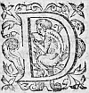
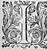
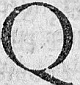
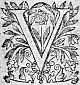
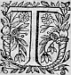

Édition de 1610, p. 681.
Édition de Vaganay, p. 429.

retirerois dans ceste chambre voisine
jusques à ce que ces Bergers s'en fussent retournez,
afin d'eviter le danger qu'il y a que je ne meη
descouvredécouvre. - Il ne le faut pas faire, dit Adamas,
car sans doute ils viennent icy en partie pour vous
voir, et ne faut penser qu'ils n'en ayent demandé des
nouvelles à Paris, aussi-tost qu'ils l'ont veu :
outre que nous le mettrions luy-mesme en une grande
doute. Alexis ne repliqua rien, parce qu'elle oüytoüit parler
Licidas au bas de l'escalier, et peu apres toute la
trouppeη
entra dans la sale, où le DruideDruyde les receut
avec des demonstrations d'amitié extraordinaires.
Ceux qui estoient les plus apparensapparents c'estoient
Diamis, oncle de Diane, Phocion oncle d'Astree,
Lycidas, Sylvandre, Coridas
η
, Amydor, et bien que
Thircis, ny Hylas ne fussent point de ceste contree,
si ne laisserent ils d'assister ces Bergers en ce
devoir, tant à cause de l'amitié qu'ils luy portoient,
que pour avoir desja sejourné trois ou quatre moisη
en
leur hameau.
Phocion au nom de tous les autres, asseura le
Druyde de leur bonne volonté, et du desir qu'ils
avoient de luy faire service, et puis luy dit, que
deux occasions particulierement les conduisoient
vers luy, l'une pour se resjouïrresjoüyr du contentement
qu'il avoit de revoir Alexis plustost et en meilleure
santé qu'il n'avoit esperé, et l'autre pour
l'advertir qu'il avoit pleu au grand Theutates leur
envoyer le Guy dans les boccages de leur hameau, et
qu'ils venoient le supplier de vouloir selon leur
coustume, prendre sala
η
peine de faire le sacrifice des
actions
de graces. Lors le Vacie s'avançant : - C'est une chose estrange, dit-il, Seigneur, que celle que je vous vay raconter. Dans cele Boccage sacré à Hesus, Taramis, Belenus η , nostre grand Theutates, j'ay trouvé des choses merveilleuses en cherchant le Guy, pour l'an neuf. Premierement un temple de petits coudres, et de jeunes chesnes, tellement pliezplyez et appuyez sur un grand arbre qui est au milieu qu'ils font une voute assez spacieuse pour y contenir une grande quantité de personnes : et dans le milieu il y a des gazons en forme d'autel, sur lesquels on voit un tableau qui represente l'amitié reciproque, avec des vers où sont escrites les douze Tables des loix d'Amour. Plus en là nous rencontrasmes un autre Temple dedié à la Deesse Astree. O Seigneur combien est-il mysterieuxmisterieux ! Il y a deux autels, dont le principal est fait en triangle appuyé contre un chesne le plus merveilleux qui fut jamais : car n'ayant qu'un tige, il se separe en trois3. branches esgales, et peu apres les rejoint toutes trois ensemble dans une mesme escorce, de telle façon qu'elles ne sont plus qu'un seul tronc, qui s'eslevant plus que je ne vous sçaurois dire par dessus les autres arbres du boccage, a esté esleu de Theutates pour son arbre bien-aymé, et pour nous en donner cognoissance, nous y avons trouvé le Guy salutaire, si beau, et si bien nourry, qu'il n'y en a point dans la contree de tel au rapport de tous les Vacies. Et sans
mentir
le nom du grand Theutates, qui est gravé en son tronc,
et celuy de Hesus, Tharamis, et Belenus, qui sont
aux trois branches avec les autres merveilles, qui se
voyent en ce lieu, font bien cognoistre, que Dieu s'y
ayme, et qu'il veut y estre adoré.
Ainsi discouroit le Vacie, et racontoit au DruideDruyde une
chose, qu'il sçavoit mieux que luy, comme en ayant
esté l'inventeur. C'estoit la coustume des Gaulois,
de chercher une lune avant le sixiesme de celle de
Juilletη
, par toute la contree, le chesne qui avoit
le plus beau Guy, et en faire rapport au grand DruideDruyde,
afin que le jour qu'il devoit estre cueilly
l'assemblée se fit dans le hameau, où il s'estoit
rencontré. Et pour cetcest
effect, tous les Vacies
s'assembloient et suivoyentsuivoient tous les boccages
sacrez, et choisissoient le plus beau, et le
marquoient. Et parce qu'ils estimoient que c'estoit
un signe d'estre aymez de Dieu, que de le trouver
dans les boccages, qui dependoient de leur hameau,
pour luy en rendre grace, ils souloient faire un
sacrifice particulier, où le grand DruideDruyde assistoit
pour peu qu'ilqui
les voulut favoriser. Et d'autant
quequ'
Adamas
aimoitaymoit infiniment ceux-cy, outre le dessein
qu'il avoit pour Alexis, du contentement duquel
il pensoit que le sien dependit : ainsi qu'il avoit
sçeu par l'oracleη
, il leur promit d'y aller quand le
Vacie le viendroit advertir. Les Bergers le
remercierent avec les plus honnesteshonestes paroles qui leur
furent possibles. - Encores, dit-il en sousriant que
j'aye quelque occasion de me douloir des Bergeres de
vostre hameau, que je
puis dire estre les seules qui
ne me sont point venu visiter, et se resjouïrresjouyr avec
moy, depuis l'heureux retour de ma fille, si ne
veux-je pour cela laisser de donner cognoissance,
qu'il n'y en a point en toute la contree que j'estime
plus qu'elles. Paris qui vouloit excuser sa
Maistresse avec les autres : - Mon pere, respondit-il,
ne leur en sçachez point mauvais gré, car je vous
asseure que je les ay veuës s'en excuseraccuser
η
elles-mesmes,
et faire resolution de venir voir ma sœur : Mais la
maladie d'Astree, qui n'est point assez grande pour
la retenir au lict, ny assez petite pour luy permettre
de venir si loing, les en a empeschees, parce qu'elles
ne vouloient point y venir sans elle : - Si cela est
vray, respondit Adamas, je reçois ceste excuse :
Mais s'il n'est pas, je suis un peu en colere.
Phocion prenant la parole : - Il est vray,
adjousta-t'il, que ma Niepce depuis quelques lunes se
trouve mal, et que depuis dix ou douze nuictsη
, elle s'abbats'abat plus que de coustume, mais je crois que pour
la guerir il la faut marier : - Vous y devriez songer
dit Adamas, car elle commence d'en avoir l'aageη
.
- Elle a, dit Phocion la moitié d'un siecle, et
trente six lunes, ou environ, et j'espere de la loger bien-tost, s'il plaistplait à Dieu.
Cependant qu'Adamas parloit de ceste sorte avec ces
Bergers, Leonide et Alexis entretenoient les
autres : mais aussi-tost que Lycidas mit les yeux
sur son frere, il demeura long temps sans les en
pouvoir retirer, car il luy sembla d'abord de voir
le visage de Celadon. Et puis le considerant de plus
pres, il demeuroit estonné,
que deux personnes puissent se ressembler si fort : Toutesfois l'opinion qu'il avoit qu'il fut mort, l'authoritéη du Druyde qui disoit que c'estoit sa fille : Et l'habit de Nimphe qui l'embellissoit, et le changeoit un peu, l'empescherent d'en descouvrir la verité, et luy faisoient démentir ses yeux. Si ne peut-il s' η empescher en fin apres l'avoir quelque temps consideréη , de luy dire : - Si je ressemblois autant à la personne que vous aymez le plus que vous, Madame, à celle que j'ay le plus aymee et honnoreehonorée , j'espererois d'estre bien tost en vos bonnes graces. - Gentil Berger, respondit Alexis, en rougissant, je suis tres-satisfaite de mon visage, puisque tel qu'il est il ressemble à ce que vous aimez, car ayant appris de mon pere, combien il vous estime et cherit, je seray tousjours tres-aise de vous donner occasion de continuer l'amitié que vous luy portez. - Et les obligations que nous avons au pere, respondit Lycidas, et les merites de la fille nous commandent à tous de vous rendre toutes sortes de services, mais à moy ce me semble plus qu'à tout autre, qui voy revivre en vostre visage, celuy pour qui je ne ferois difficulté de mettre ma vie, si cela pouvoit rappellerr'appeller la sienne. Telles furent les premieres paroles dont ces deux freres userent : et quoy que Leonide se contraignit, si ne pût-elle s'empescher de sousriresousrier , voyant combien Licidas estoit trompé. Mais ayant peur qu'Alexis à l'abord ne fut pas bien accoustumee de parler en fille, elle voulut interrompre leur discours, feignantfaignant d'estre curieuse d'entendre des nouvelles
des Bergeres ses amies qu'elle n'avoit veuës il y avoit plusieurs jours. - Vous reprendrez une autrefois ces belles paroles dit-elle, Licidas, mais à ceste heureà cette heure dites-moy je vous prie, comment se portent mes cheres amies, j'entens les BergeresBergers de vostre hameau ? - Les unes respondit Licidas, sont contantescontentes , les autres faschees, et les autres ny fascheesfâchees ny contantescontentes :mais passent doucement leur vie. - Qui est celle, adjousta Leonide, qui est tant insensible au bien et au mal, qu'elle ne ressent nyni l'un nyni l'autre ? - C'est, respondit Licidas, la Bergere Diane, car n'aymant rien je ne croy pas qu'elle puisse avoir ny bien ny mal, puis que tous les biens et tous les maux qui ne procedent d'amour, ne meritent d'avoir ce nom. - Je croy dit Leonide, que vous le pensez comme vous le dites : mais chacun n'est pas de cestecette opinion. - Ceux qui le jugent autrement, dit-il, ressemblent à ces anciens qui croyoient l'eau et le gland estre la meilleure et plus douce nourriture de l'homme, parce qu'ils n'avoient esprouvé nyni le vin nyni le bled, et maintenant nous tenons que l'eau et le gland ne sont que pour les bestes : de mesme quand ils auront esprouvé les douceurs ou les amertumes d'amour ils advouërontavouëront que tout le reste n'est rien. - Et croyez-vous, continua Leonide, que Diane n'aytait rien ayméaimé , ou qu'elle n'ayme rien encores ? - Je ne sçay, respondit Licidas, ce qui est du passé ; mais pour cestecette heure je croy qu'elle laisse toute l'amour aux autres. - Vous me ditesdittes , repliqua Leonide, de mauvaises nouvelles pour Paris : - Voila que c'est, dit le Berger que de la sottise de nos villages,
si ne puis-je penser que Diane ressente avec Amour l'honneur que Paris luy fait : toutesfoistoutefois , si j'estois deceu, je ne serois pas le premier trompéη au jugement des femmes. - Or bien dit Leonide, laissons Diane pour ce coup, car si elle n'aimeayme point encore, ne doutez que sa fortune ne l'attende, et dites-moy quellequi est celle qui est faschee ? - C'est Astree, respondit Licidas, car Phocion qui est avare, et qui ne songe suivant la coustume des vieillards qu'à loger richement sa Niepce, veut qu'elle espouse un Berger des Boyens, nommé Calydon, qu'elle n'a jamais veuη qu'un moment à quoy elle ne se peut resoudre, et je ne croy pas quant à moy que ce vieillard en vienne à bout. - Ce Calydon, dit la Nimphe, n'est-ce pas le Nepveuneveu de Tamire ? - C'est celuy-là mesme, respondit-il. - Mais a-t'il oublié, repliqua Leonide, l'Amour de Celidee ? - O Madame, adjoustaadjouta le Berger, que Celidee n'est plus celle qu'elle souloit estre, et que l'accident de sa perte est estrange ! - Comment, dit la NimpheNymphe, Celidée est perduë ? - Elle se peut dire telle, respondit-il. Et Tamire n'a rien à ceste heureà cette heure tant à cœur que de marier Calydon. EncorEncore qu'Alexis parlast avec Hylas, Corylas, et Amidor, si ne laissoit elle de prester l'oreille à Licidas, et d'oüir ses parolesouyr ces parolles , qui luy serrerent de sorte le cœur, qu'il n'y euteust Berger qui n'y prist gardeprint, parce qu'elle changea au commencement de couleur, et puis devint froide comme un glaçon : cela fut cause que Leonide luy dit : - Vous vous trouvez mal, ma sœur, ce sont encoresencore des restes de vostre maladie, vous devriez
vous asseoir. Hylas qui dés le moment qu'il l'avoit veuë, l'avoit trouvee tant à son gré, que Philis commençoit fort à perdre son cœur, et celle-cy à le luy desrober, la prenant sous les bras, lalà fit asseoir à moitié par force, et se mettant à genoux aupres d'elleelles ne destournoit nullement les yeux de dessus son visage. Cependant Leonide et Licidas se retirant contre une fenestre continuerent leur discours, mais avant que de les reprendre Licidas considerant Alexis : - Je ne puis, dit-il, souler mes yeux de regarder la belle fille d'Adamas : car elle ressemble de telle sorte à mon pauvre frere, que plus je la considere, et plus j'y trouve des traictstraits , soit au visage, soit en ses façons, ou je n'y cognoisconnois difference que celle des habits. - Y a-t'il long temps, respondit Leonide, qu'il est mort ? - Il y a environ quatreη lunes, respondit-il. - Je suis marrie, adjoustaadjouta Leonide, de ne l'avoir jamais veu, pour avoir ouy dire beaucoup de bien de luy. - Quant à ce qui est de son humeur, et de son esprit, dit Licidas, je ne sçaurois vous le monstrer, mais pour son visage et pour ses actions, regardez Alexis, et vous le verrez. Et lors il continuoit : - Voila son mesme œil, sa mesme bouche, sa mesme rondeur de visage : Et par fortune Alexis en mesme temps sousrit de ce que Hylas luy disoit, encor qu'elle n'en eust pas beaucoup d'envie. - O Dieux ! dictdit Licidas, voila son mesme sous-ris, et son mesme tourner de teste : fust il jamais rien de si ressemblant ? Leonide qui craignoit que cestecette consideration trop continuee ne luy fit découvrir qu'Alexis ressembloit si
fort à Celadon, que c'estoit Celadon mesme, luy dit : - Mais à propos de vostre frere : lors que Paris luy dressa ce vain Tombeau, j'appris qu'Astree l'avoit infiniment aymé, et qu'elle ne s'estoit peu empescherempécher de le declarer un peu avant que nous y fussions arrivez. - Je le sceus aussi par Tircis, respondit Licidas : Et pleustpleut à Dieu, continua-t'il avec un grand souspir, que cela n'eusteut point esté, je jurerois presque que mon frere seroit encores en vie. - Et comment, dit Leonide, l'accusez vous de sa mort, puisqu'elle n'en pouvoit mais, estant elle-mesme en un extreme danger, à ce que j'ay ouy dire ? Licidas respondit froidement : - L'histoire seroit trop longue et trop ennuyeuse pour la raconter maintenant : tant y a que si elle souffre du mal pour Calidon, qui ne l'ayme point, je crois qu'Amour l'ordonne ainsi pour venger la perte de Celadon qui l'adoroit, et dont elle est coulpable. - Et y a-t'il long temps, dit la Nimphe, que cestecette belle filleη est perduë ? - Il y a, respondit Lycidas, douze ou quinze nuictsη . - Ce fut donc, adjoustaajouta la Nimphe, peu de temps apres qu'elle receut nostre jugement : - Dix ou douze nuictsη apres, dict le Berger, et vous asseure que tous ceux qui l'avoient cognuëconnue l'ont regrettee. - Quant à moy, dit la Nimphe, je n'en ay rien sceu qu'à ceste heureà cette heure, et je vous jure que je ressens sa perte. Mais dictesdites -moy Licidas, comment est elle advenuë.
SUITTE DE
L'HISTOIRE
DE CELIDEE.

consommé, on n'oyoit dedans la maison, que resjoüissanceresjouyssance de ceux qui attouchoient de quelque parentage à cestecette fille, pour l'esperance du support qu'ils esperoient de ce riche Pasteur. Jusques à ce poinctpoint Calydon obeytobeit à vostre ordonnance, mais quand il vint à penser que ceste nuictcette nuit Celidee seroit entre les bras d'autreautres que de luy, il perdit toute resolution, et rendit bien tesmoignage par cestecette action, que quand les yeux voyentvoient ce qu'ils n'ont jamais veu, le cœur pence ce qu'il n'a jamais pensé : car s'estant auparavant figuré d'estre resolu à cestecette perte, quand il vit qu'il n'y avoit plus qu'une heure d'intervalle entre son esperance, et l'entiere perte de son esperance, il perdit toute resolution, oublia tout devoir, et mesprisa toute consideration. Il estoit retiré à un des coins de la chambre, où cesteou cette pensee le faisoit mourir de regret, cependant que chacun dansoit. Thamire qui l'aimoit comme si c'eust esté son enfantη , se douta bien d'où procedoit cestecette tristesse, et ayant pitié de son mal, s'approcha doucement de luy, qui ravy en son desplaisir proferoit à voix basse telles parolesparolles sans apercevoirappercevoir son oncle.

Mais si je meurs, je ne pers pas,
Le souvenir qui me tourmente,
Au creux de ma Tombe relente,
Ce regret suivra mon trespas.
Quelle fortune pitoyable,
Me contrainct Amour de courir,
Puis que pour n'estre miserable,
Je ne puis vivre ny mourir ?
Thamire l'escoutant en prit une compassion qui ne fut pas petite, et plus encores lors qu'apres ces paroles il luy vit tendreη les yeux en haut, et joindre les mains dans son giron, couvrant son visage de larmes qui luy empeschoient de parler. Il se retira doucement, et s'addressant à Celidee, luy dit l'estat en quoy il l'avoit trouvé, et la pria de parler à luy, et luy donner quelque consolation. La Bergere qui estoit bien aise d'obeïr à Thamire, et qui faisoit dessein de n'avoir point les mauvaises graces de Calydon, puisqu'elle devoit vivre avec son oncle, s'y en alla aussi-tost que Thamyre le luy eut dicteust dit , et le trouvant en cet estat : - Et quoy, luy dictdit -elle, Berger, serez-vous le seul qui ne danserez point ? - A la verité, respondit-il, en luy tendant la main, vous avez raison, belle Celidee, de me faire cestecette demande, car c'est bien à mes despens que ce
bal se faictfait . Mais pleustpleut à Dieu, que sans offenseroffencer Theutates, ny vous, je puisse aussi bien mettre fin à mes jours, que ceste nuictcette nuit me ravira tout espoir de contentement. - Et qu'est-ce que vous voulez dire ? respondit la Bergere, feignant de ne l'entendre pas. - Je veux dire, repliqua-t'il, que si je ne craignois d'offencer Teutates, en me faisant mourir sans son commandement, et vous en vous faisant perdre un serviteur, cestecette main me raviroit la vie avant qu'en cestecette malheureuse nuict Thamire possedastpossedat en vous ce que mon affection seule pourroit meriter. Celidee faisant semblant de ne penser plus en ces choses : - J'avois opinion, dit-elle, que vous eussiez oublié toutes ces folies, et en est-il encores memoire ? - Comment, reprit Calidon avec un grand souspir, que Calidon oublie jamais Celidee : Et n'avez-vous point de peur que Tharamis vous chastie pour l'offence que vous faictesfaites à mon Amour : - Vous en devriez bien avoir davantaged'avantage de Teutates, respondit-elle, que vous appellastesappellates quand vous promistespromites à Leonide d'observer ce qu'elle ordonneroit, et avez-vous desja mis en oubly le jugement qu'elle fit ? ouoù pensez-vous que les Dieux l'ayent oublié ? ou comment esperez-vous que le GuyGui de l'an neuf vous puisse estre profitable, puis que c'est par luy que vous jurastes ? Pour le moins je vous conseille de ne chercher jamais l'œufη salutaire des serpents : car vous courez fortune de n'en point eschappereschaper . - Ha ! Bergere, reprit Calidon, ne croyez point que j'aye oublié l'injuste jugement de l'impitoyable Nimphe
(pardonnez-moy, Madame, dictdit Licidas, si j'use des mesmes mots du Berger interessé) le souvenir m'en est trop douloureux pour l'oublier. Ne pensez non plus que j'aye opinion que Teutates n'ait memoire de ce que je juray : mais n'estimez pas aussi que je tienne que le Guy de l'an neuf, ny l'œufη des serpents me soit salutaire, puis qu'en vous perdant il n'y a plus rien au monde dont je me soucie. - Encores devez-vous redouter, dictdit -elle, la justice des Dieux apres vostre mort. - Ils ne sçauroient, respondit-il, me donner plus de mal que j'en souffre en vie, et sçay bien qu'ils n'ont point de plus cruels supplices que ceux que j'endure. Mais ne croyez toutesfoistoutefois que je sois si peu juste observateur de ce que j'ay promis : car si vous avez bonne memoire, je dis que je voulois que jamais le Guy de l'an neuf ne me peutpût estre salutaire, et que si je rencontrois l'œufη soufflé des serpents, je priois Teutates qu'il les animast de sorte contre moy qu'ils me fissent mourir, si je n'observois le jugement de la Nimphe tant que je vivrois. - Et bien, dit-elle, n'y contrevenez-vous pas par les paroles que je vous me venez de dire ? - Nullement, respondit-il, car j'ay mis une condition qui m'en empescheempeche . - Et quelle est-elle ? dit Celidee. - Que je n'y contreviendrois point, dit Calydon, tant que je vivray et ne voyezvoiez -vous pas que je mourus dés-lors que cestecette ordonnance fut faite, si pour le moins, la vie est un bien : car dés ce moment mal-heureux, je perdis
non seulementseullement toute sorte de bien, mais toute esperance mesme de quelque bien. Que si toutesfoistoutefois vous appellez vivre que de languir comme je fais, dans peu de nuicts je laisseray sans doute ce que vous nommez vie : que si entre cy et là je contreviens à ce que j'ay juré, je veux bien que le Guy de l'an neuf ne me serve de rien, aussi bien n'espere-je pas de le voir jamais, outre que sans vous rien ne me peut estre salutaire : Et je mourray bien-tost, si les Dieux veulent exaucer les vœux du plus desolé homme du monde. - Et quel avdantage esperez-vous, dit-elle, en mourant ? - J'attends, dit-il, toute ma felicité, puis qu'il me sera permis de vous aymer, sans offencer ny Tamire ny les Dieux, ny vous que je redoute davantage. Mais cruelle Bergere, quel dessein vous conduit vers moy ? Est-ce point pour triompher encor une fois de Calydon, ou bien pour imiter ces cruels, qui ayans tué le miserable qui ne se deffend point en viennent voir le corps pour considerer combien grandes et diverses en sont les blesseures ? - Ce n'est point ce sujectsujet , desolé Berger, dit-elle, qui me conduit, mais pour essayer de vous divertir de vos tristes pensees, et voir si je puis vous donner quelque soulagement, sans contrevenir toutesfois à la volonté des Dieux. - Et comment ? interrompit-il incontinent, il ne vous suffit pas que je meure, par la cruauté de mon destin, et par l'injustice des hommes, qui m'ont ravy tout ce qui me pouvoit retenir en vie, si vous n'y adjoustiezajoutiez encore cestecette vaine compassion que vous faitesfaictes paroistre d'avoir de moy, seulement
pour me faire mourir avec plus de regret ?
Quoy ! Celidee, vous voulez que je pense que vous
estes touchee de pitié en voyant le miserable estat
où je suis, afin que vous perdant et vous voyant
possedee par un autre je vous plaigne davantage ?
Si c'est vostre dessein, vivez contente, et croyez
que vous ne sçauriez me desirer plus de mal que celuy
que je ressens : et si ce ne l'est pas, ne me parlez
jamais plus de pitié, de salut, de remede, ou de
quelque esperance : car j'en suis aussi incapable que
le ciel, et vous avez eu peu de volonté de mon bien.
Et à ce mot la laissant, quoy qu'elle s'efforçastefforçat de
le retenir, il sortit hors de la Chambre.
Il estoit desja tard, de sorte que le bal finit bien-tost
apres, et chacun se retira quand Celidee, suivant
nos coustumes eust esté mise dans le lict aupres de Thamire, vous devez croire que le contentement de ce
Berger estoit à son extremité, puisque le ciel ne
luy en voulut point donner davantage, comme je vous
diray. Calidon au sortir de la chambre s'en alla
hors du logis, et de fortune se coucha soussoubs des
grandsgrandes
ormes qui estoient
le long du chemin aupres de la maison, où apres
avoir consideré quel heur estoit celuy de Thamire,
et au contraire combien sa fortune depuis peu de
temps s'estoit changee, il prit si grand serrement
de cœur, que peu à peu l'ennuy luy ravissant la
force il demeura esvanoüy, et si longuement que Cleontine, et sa trouppe sortant du logis de Thamire, le trouverent estendu : et comme s'il s'y fustfut endormy : mais l'ayant voulu esveiller, et voyant
qu'il ne
se remuoit point, Cleontine mesme le prit par laune main, et d'autant que toute la chaleur avoit delaissé les extremitez du corps pour se retirer autour du cœur, elle le trouva si froid, que toute surprise de frayeur, elle s'escria : - ô Dieu ! Calidon est mort ! Quelques-unes de ses parentes qui ouïrent ceste voix y accoururent, et le voyant en cest estat esleverent de si grands cris qu'elles y firent accourir tout le voisinage : Et parce qu'il estoit infiniment aimé, et que cest accident estoit tant inesperé, plusieurs retournerent dans le logis de Thamire, où criant à haut de teste que Calidon estoit mort, Thamire en oüit le bruit, et n'oyant que le nom de Calidon et de mort, se doutant de quelque sinistre accident, saute hors du lict en terre, court à la porte, et appelle quelqu'un de la maison, et enfin apprend que Calidon est mort. Il aimoit ce nepveuneveu autant que s'il eusteut esté son filsη : si bien qu'à ces premieres nouvelles, il faillit de tombertumber de sa hauteur sur le plancher, mais estant soustenu par quelques-uns des siens, ce fut tout ce qu'il peut faire que de sele remettre au lict avec l'aideayde de ceux qui le tenoient. Aussi-tost qu'il fut couché il demeura sans poux, et peu à peu devint froid, et enfin s'il n'eust esté secouru, il luy en fustfut autant advenu qu'à Calidon : mais les divers remedes qu'on luy fit, et le soinsoing que Celidee en eut, l'en empescherent. Qui eusteut veu ceste belle et jeune Bergere toute eschevelee, et à moitié vestuë fondre en larmes, sur le visage de Thamire, lors que peu à peu il alloit deffaillant entre ses bras, et n'eust esté touché de
pitié, eusteut eu sans doute une ame ou un cœur de rocher. On dict qu'on ne vit jamais rien de plus beau, et sembloit que les nonchalances de son habit, et le peu de soing qu'elle avoit d'elle-mesme adjoustassentη une grace extrémeextresme à ses beautez. Tant y a qu'elle fit revenir Thamire, et le pressant entre ses bras à moitié nuds, et se colantcoulant sur sa bouche avec un ruisseau de pleurs, ne pouvoit le caresser assez à son gré. Mais le pauvre Berger estant presque devenu insensible à toute autre passion qu'à celle de la perte qu'il pensoit avoir faite, repoussant doucement Celidee, et tournant la teste à costé recevoit ses baisers si froidement qu'il sembloit qu'ils luy fussent ennuyeux. Car sans seulement la regarder il demandoit d'ordinaire des nouvelles de Calydon : mais voyant qu'il n'en pouvoit avoir de bonnes ; - Il faut, dit-il, que je le voyevoie , et s'il est mort pour le contentement que j'ay que je meure pour le desplaisir qu'il a eu : Et se jettant de furie à terre, s'habillaabilla à moitié, et courut à demy nud au lieu, où le pauvre Calidon estoit estendu de son long, ressemblant tout à faitfaict à une personne morte. D'abord chacun luy fit place : tant pour le respect qu'on luy portoit, que pour la compassion qu'on avoit de son dueil, qui devoit estre grand, puis qu'il luy faisoit laisser Celidee, et desdaigner le bien qu'il avoit si long temps, et si ardamment desiré. Soudain qu'il vit Calidon ayant opinion qu'il fut mort, il se laisse choir dessus si mal à propos, que donnant du front contre une pierre quarrée, sur laquelle on avoit appuyé
la teste de Calidon, et rencontrant par malheurmal'heur le trenchant, il se la fendit si avant que le sang incontinent luy en retombaretumba par le visage, et en demeura esvanoüy. Ceux qui estoient autour de Calidon, oyant le coup que Thamire s'estoit donné, eurent bien opinion qu'il se fustfut blessé, mais non pas tant qu'il estoit : et n'eust esté qu'ils le virent si long temps sans mouvement, et qu'il ne parloit point, ils n'y eussent pris garde que bien tard. Le cryη se redoubla, et les clameurs de ceux qui voyoient ce piteux spectacle : mais jugez quelle fut la veuë que Celidee eust quand on rapporta son mary, et son nepveu, comme s'ils eussent esté morts. De fortune lors qu'on voulut oster de dessus une eschelle Calidon pour l'emporter plus à son aise dans une chambre il revint, et voyant tant de peuple autour de luy, et qu'il estoit couvert du sang de Thamire, il ne sçavoit que penser, et luy sembloit de resver. Mais quand il vid emporter son oncle qui n'avoit point encores de sentiment, avec cestecette grande playe à la teste, s'imaginant que quelqu'un l'eust blessé, il se releve porté de la furie, et demande qui est le meurtrier, et prenant à ses pieds un cailloucailloux , tenoit le bras relevé comme prest d'en assommer celuy qui auroit faitfaict cest homicide, mais quelques-uns de ses parens, le rapaisant luy firent entendre comme le tout s'estoit passé. - Comment, s'escria-t'il, c'est donc moy qui ay faitfaict ce parricide ? Il n'est pas raisonnable que je n'en fasseface aussi bien la vengeance, que si c'estoit un estranger, voire d'autant plus grande que je luy ay plus d'obligation. Et à ce
mot il se leva le bras pour se frapper de la pierre contre la teste, mais ceux qui estoient aupres de luy furent prompts à coure au coup, et les uns luy retindrent le bras, et les autres luy firent tombertumber la pierre de la main, et le saisissant des deux costez, ne l'abandonnerent plus qu'il ne fustfut un peu remis. Cependant Thamire par les cris de Celidee, et par les remedes qui luy furent faictsfaits , ne fut pas plustost pansé et remis dans le lict qu'il revint de son évanoüissement, et à l'ouverture de ses yeux, soudain qu'il peutput parler la premiere parole qu'il profera, ce fut le nom de Calydon, demandant où estoit son corps. - Calydon luy respondit, un vieux Myre qui l'avoit pansé, se porte mieux que vous, et n'a point d'autre mal que le vostre. - Comment dictdit -il, Calydon n'est pas mort ? Ha ! mes amis me renouvellez point ainsi ma peine. - Il n'est point mort, respondit le Myre, et si vous voulez ne vous point esmouvoir quand vous le verrez, nous le vous amenerons icy en bonne santé. - O Dieu, dit Thamire, si ce que vous ditesdictes est vray, ne me dilayezdilaiez point davantage ce seul remede qui me peut guarir. Et à ce mot il se voulut efforcer de se lever, mais les Myres l'en empescherent. Et parce que, de son costé Calydon pressoit avec une impatience extrémeextresme de le voir, ils penserent que pour remettre leur esprit en repos, il seroit bon de les faire entre-voir, encor qu'ils craignissent fort que ceste esmotion ne fustfut cause que la playeplaie de Thamire ne retournastretournat seigner : mais jugeant que cest inconvenient seroit moindre que les autres dont le desnydesni
qu'ils luy en pourroient faire, le menaçoit. Ils firent venir Calidon, qui voyant Thamire en cet estat, et ayant desja entendu tout ce qui s'estoit passé, se jette d'abord à genoux devant luy, et luy demande pardon de l'ennuy qu'il luy a donné. - Excusez, luy dictdit -il, mon pere le peu de puissance que j'ay sur moy : j'ay faict ce qui m'a esté possible pour ne vous en donner cognoissance, et voulois bien mourir s'il m'eust esté possible, sans vous donner cestecette seconde occasion de regretter la peine que vous avez euë à m'eslever, mais la fortune qui ne cessera de m'affliger tant que je seray en vie, ne m'a pas mesme voulu contenter en cela. Je viens vous en demander pardon, et vous supplier de croire que je n'auray jamais contentement, que je n'aye tellement satisfait àsatisfaict cestecette faute ; qu'il ne m'en reste nulle tache. - Mon filsη , dit Thamire en luy tendant la main, releve toy, et me viens embrasser, et croy que si j'eusse pensé que Celidee eust peu estre tienne, jamais je ne l'eusse voulu avoir : tout le regret qui me reste à ceste heureà cette heure, est que si autresfois il y a eu un empeschement à ton desir, il y en a maintenant deux. Le premier, celuy de sa volonté, qui a tousjours esté tant esloignee de toy, que jamais elle n'y a peupu consentir : et l'autre le mariage qui est entre elle et moy : Que si sa volonté se pouvoit changer aussi bien que je pourrois remedier au dernier, sois certain, Calidon, que la mort me seroit agreable si je pensois que par ma mort je te rendisse content. Calidon vouloit respondre, mais il ne peutput , de peur de l'interrompre, par ce qu'en mesme temps il addressaadressa sa paroleparolle à
Celidee. - Et vous, ma fille, dit-il, qui voyez combien vous estes aymeeaimee de Calydon, sera t'il possible que vous ne changiez jamais de volonté envers luy ? ny son affection, ny ses merites, ny mes prieres ne pourront-elles jamais rien envers vous ? Sera-t'il vray que Celidee soit nee pour faire mourir Calidon et Thamire, et d'amour et de regret ? Celidee toute en pleurs vouloit respondre, lors que Calidon reprit la parole ainsi : - Il ne faut pas, mon pere, que l'ordonnance du ciel, et ce qu'il a pleu à ceste belle d'ordonner de moy, soit autrement qu'il est. Teutates sçait mieux ce qu'il nous faut que nous-mesmes. Il n'est pas raisonnable que deux personnes qui meritent toute sorte de bon-heur, comme font Thamire et Celidee, changent de fortune pour le plus infortuné qui fut jamais entre les hommes : Et quant à moy, je proteste entre vos mains, et appelle le ciel et la terre pour tesmoins, que je ne veux point contrevenir au jugement qu'il a pleu aux Dieux de faire de nous par la bouche de la Nimphe. - Et que signifient donc, dit Cleontine, ces plaintes, ces pleurs et ces esvanoüissements ? - Ce sont, respondit Calidon, des tesmoignages que je suis homme : mais comme les bons MyresMyre n'ostent pas la main de la blesseure, encoresencore que le patient s'en plaigne, voire en crie, de mesme vous ne devez tous laisser de mettre fin à ce qu'il a pleu à Theutates d'ordonner en ceste affaire, et je ne vous demande autre faveur, sinon qu'il me soit permis de me plaindre, voire de crier quand la douleur du mal me pressera. - Non non, dict Celidee, d'une parole proferee avec violence, ne vous mettez plus en peine, ny les
uns ny les autres : Le grand Dieu Tharamis vient de m'inspirer secrettement un moyen pour vous mettre tous en repos d'esprit. Il n'est pas raisonnable Thamire, que tes prieres et tes remonstrances demeurent plus long temps sans nul effect : mais il ne faut pas que nous contrevenions à la volonté de Theutates, ny que l'affection que tu m'as portee, soit inutile, non plus que l'amitié que dés le berceau je tη 'ay euë. Et toy aussi Calydon il ne faut pas que tu te consommes toute ta vie de ceste sorte : vivez tous deux contenscontents , et me donnez loisir seulement de quatre ou cinq nuicts, et vous verrez que le Ciel m'a mis en l'ame un moyen pour vous sortir tous deux de peine. A ce mot elle reprit ses habits, et pria Thamyre de trouver bon qu'elle ne couchast point de trois ou quatre nuicts aupres de luy, afin qu'elle peust achever ce qu'elle avoit desseigné. Thamyre qui commençoit de ressentir la douleur de sa playe, et qui outre cela eust consenty à sa mort pour sauver la vie à Calydon, luy accorda librement sa demande, et apres quelques autres propos sur ce sujectsubject , les Myres, qui virent que l'esperance que Celidee leur avoit donnee leur rapportoit quelque sorte de repos conseillerent toute la trouppetroupe de se retirer, et Calydon faisant apporter un lict dans la chambre de Thamyre, ne le voulut plus abandonner : d'autre costé Thamyre avoit tant de satisfaction de l'amitié que son nepveu luy faisoit paroistre, qu'il le vouloit tousjours avoir pres de luy. Il n'y avoit que Celidee qui fut bien en peine, car elle ne vouloit declarer sa deliberation
à personne, de peur d'y estre contrariee, et toutesfois elle ne sçavoit par quel moyenmoien y parvenir. Elle avoit fait un dessein bien different de celuy de toutes les filles, parce que cognoissant que la beauté de son visage, estoit cause de l'amour que l'oncle et le nepveuNeveu luy portoient avec tant de passion, et considerant que c'estoit la seule occasion du divorce qui estoit entr'entre eux, elle resolut de se rendre telle qu'ils fussent à l'advenir autant refroidis par sa laideur, qu'ils avoient esté eschauffez par sa beauté : esperant par ce moyen de remettre Calidon en son bon sens, et de rendre preuve à chacun qu'elle n'avoit jamais consenty à ses folies. Lors qu'elle y eust longuement pensé, ne pouvant se resoudre au fer, à cause du sang et de la cruauté, à quoy son courage ne pouvoit consentir : outre qu'il luy sembloit que les coupures se guerissent, et que ce seroit tousjours à recommencer : elle s'addressa à la mere de sa nourrisse, et la tirant à part, luy fit entendre qu'elle avoit une si extreme animosité contre une Bergere, sa voisine qui l'avoit infiniment outragee : qu'elle estoit resoluë d'en prendre vengeance : qu'elle ne la vouloit pas faire mourir, parce que sa haine ne passoit jusques à la mort : mais qu'elle desiroit de s'en venger sur son visage, comme la plus chere chose qu'elle eust : Qu'à ceste occasion elle la prioit de luy enseigner quelque herbe, ou quelque autre recepte, qui pustpeust tellement gaster le visage d'une fille, qu'elle ne pustput plus revenir en son premier estat. La bonne femme qui aimoit Celidee comme si elle l'eust nourrie,
luy respondit fort sagement qu'elle devoit perdre ceste mauvaise volonté, et chasser de son ame ce cruel desir de vengeance : que si l'autre l'avoit offencée, elle en laissast le chastiment à Hesus, qui avoit la puissance de le faire, et qu'il estoit à craindre, que celle à qui elle vouloit faire du mal, ne le luy rendit par apres au double : bref, elle luy representa tout ce qu'elle put pour l'en divertir. Mais ceste sage fille qui avoit un dessein bien different à celuy qu'elle disoit, s'opiniastrant en sa demande, et luy faisant entendre que ce n'estoit pas personne qui put s'en venger, outre qu'elle le feroit faire si secrettement qu'elle ne sçauroit à qui s'en prendre, la conjura encores par toute l'amitié qu'elle luy portoit, de satisfaire à sa demande, luy protestant que si cela n'estoit elle se resoudroit à quelque chose de pire, et qu'elle en seroit cause. La bonne femme luy respondit qu'elle en seroit bien marrie, et que dans deux ou trois nuicts, elle luy en rendroit responce :- N'yN'i faillez donc pas dit Celidee, car si vous me trompez, vous serez cause de quelque plus grand mal. Le terme estant escoulé, que ceste bonne femme n'avoit pris que pour pousser le temps comme l'on dit avec l'espaule. Elle luy en demanda encor autant : mais Celidee qui cognut bien que ce n'estoit que pour l'amuser, fit semblant de la croire, et cependant resolut de faire de son costé ce qu'elle penseroit estre meilleur pour achever son dessein, feignant de ceste sorte avec ceste bonne vieille, de peur qu'elle ne descouvristdescouvrit sa deliberation à Cleontine. CerchantCherchant donc tout
ce qu'elle pouvoit pour devenir laide, de mauvaise fortune elle estoit un matin à la chambre de Cleontine qu'elle estoit encor au lict, et parce que ceste bonne femme avoit accoustumé de porter une pointe de diamant au doigt pour signeη qu'elle estoit dediee à Theutates, comme vous sçavez, Madame, que c'est la coustume de toutes nos DruydesDruides, Elle la posoit tous les soirs avant que de se mettre au lict, et la reprenoit le matin. Il advint que Celidee prenant ceste bague se la mettoit au doigt, et de l'un en l'autre alloit cherchant auquel elle estoit plus juste, sans peut-estre songer à ce qu'elle faisoit. Dont Cleontine s'appercevant : - Voudriez-vous bien, luy dit-elle, ma fille estre obligée de porter ceste bague aux mesmes conditionsη que je la porte ? - Si j'en estois capable respondit Celidee, il n'y auroit rien au monde que je souhaittasse davantage : - Et comment dit Cleontine, penseriez vous satisfaire à Thamyre et à Calydon, ainsi que vous avez promis ? - Ce seroit, respondit-elle le meilleur remede de tous, car ils sont si religieux qu'estant dediee à Theutates, ny l'un ny l'autre ne voudroit pas m'en retirer. - L'amour, dit Cleontine, est encor plus forte que le devoir, ny que la religion : mais dites moy ma fille, de quelle sorte pensez-vous de les contenter ? Car je ne le puis entendre : en premier lieu, vous ne pouvez estre qu'à Thamyre, puis que vous estes sa femme, et quand vous voudriez vous dedier à Theutates, vous ne le pouvez sans la permission de celuy à qui vous estes. Et quand vous seriez une DruydeDruide, penseriez
vous pour cela les contenter tous deux ? tant s'en faudroit, vous les mescontenteriez, les privant de vous. - Ma mere, respondit Celidee, le grand Dieu qui me mit les paroles en la bouche, lors que pour allegeraleger leur ennuy je promis ce que vous me demandez, m'en donnera sans doute quelque moyen : puis qu'il ne laisse jamais une œuvre imparfaicte : il a commencé celle-cyci par moy, il me rendra asseurément capable de la finir avec son aide. - Ma fille, dit Cleontine, estonnee des sages propos de sa niepce : Je ne suis plus en doute qu'il n'advienne comme vous ditesdictes : pourveu que veritablement vous vous remettiez en luy, car jamais personneη ne futfust refusee, quand c'est avec une bonne et pure intention qu'on le supplie. Cleontine vouloit continuer : mais Celidee qui, sans y penser, s'estoit mis la pointe du diamant dans la main, se print à crier de la douleur que l'esgratigneuresgratigneure luy avoit faicte : dequoy la bonne femme surprise : - Qu'avez-vous ? dit-elle, ne vous estes vous pas blessee de ce diamant ? - C'est peu de chose respondit Celidee, mais la douleur m'a contrainte de crier. - Vous pensez dit Cleontine, que ce soit peu de chose, si vous trompez vous fort, car jamais la marque ne s'en va, et malaisément en peut-on guerir, et lors luy prenant la main, et voyant qu'elle estoit fort esgratignee : - Croyez, luy dit-elle, Celidee, que vous estes marquee pour vostre vie, et que si cela vous estoit advenu au visage, vous seriez gastee. - Comment, dit Celidee, le diamant est-il si venimeux : - Jamais dit-elle, sa marque ne s'en va depuis que le sang en
sort, et c'est pour ce sujetsuject que je le laisse quand j'entre au lict. Il seroit malaisé de dire le contentement que receut ceste jeune Bergere, ayant appris ce secret, luy semblant que Dieu le luy avoit enseigné expres pour achever ce qu'elle avoit desseigné. Quelle resolution, Madame, est celle que je vous vay raconter de ceste jeune fille ! Il y avoit desja cinq ou six jours que Thamire en tombant s'estoit blessé, comme je vous ay dit, et sa playeplaie n'estant pas dangereuse, elle commençoit d'estre presque guerie, de sorte qu'il n'en tenoit plus la chambre : Celidee qui n'attendoit que sa guerison, pour sortir de la promesse qu'elle avoit faictefaite , et de laquelle Calydon, et Thamyre la sommoient, leur dit, d'un visage assez joyeuxjoieux , que le lendemain elle les contenteroit tous deux. Dés le soir quand sa tante fut couchee, elle desroba la bague dont elle s'estoit blessee, et feignant de se retirer pour se désabiller, chacun s'en alla coucher : au contraire, elle entra dans un petit recoinrecoing où elle avoit accoustumé de demeurer seule quand elle vouloit s'abiller ou desabiller, et ayant bien serré la porte elle s'assit pres d'une table où elle avoit un miroir, duquel les jours des grands sacrifices et des assemblees generales, ou festes publiques, elle avoit accoustumé de se servir, pour agencer son visage. Aussi-tost qu'elle y jetta les yeux dessus : - Ah ! miroir, dit-elle, de qui je soulois prendre conseil avec tant de soing et de vigilance, pour accompagner et augmenter la beauté de mon visage, combien est changé ce temps là : et combien est differente l'occasion
qui me faitfaict à ceste heureà cette heure te demander conseil : puis que si autrefoisautresfois j'ay jetté les yeux sur toy, pour me rendre belle, j'y viens maintenant pour sçavoir comment je me puis priver de ceste beauté que j'ay euë si chere ? Et à ce mot ouvrant le miroir, et considerant son visage tout couvert de pleurs : - Ce seroit dit-elle, estre bien inhumains, mes yeux, si vous ne pleuriez la prochaine perte de ceste beauté, qui autrefois vous a rendus si contents, et pleinsplains de joye, quand glorieux d'une si chere et aymableaimable compagne, il ne vous sembloit point de voir un autre visage, qui se pust esgaler au vostre. Et puis demeurant quelque temps sans parler, et considerant particulierement sa beauté et sa grace, la juste proportion de ses traits, le vif et doux esclair de ses yeux, l'esclat de son teint, les attraits de sa bouche, bref tout ce qui estoit d'agreable en son visage, - J'entens bien, dit-elle, ô mes chers et rares thresors, ce que vous me voulez dire, mais helas ! continuoit-elle en souspirant, que me vaut cela, si je ne puis vivre contente en vous conservant ? Je sçay bien que vous me representez que ceste beauté que j'ay tant cherie, et qu'autrefois j'ay estimee mon souverain bienη , me reproche une grande legereté de m'en vouloir priver, avant presque que de la posseder. Je ne suis pas sourde aux supplications que je me fais à moy-mesme : de ne me point appauvrirapauvrir de ce que chacun recherche avec tant de desir : Mais quand je vous accuseray devant la raison d'estre cause de toute la peine que j'eus jamais. Quand je vous blasmeray de la
dissention de l'oncle et du neveu, voire quand je vous diray coulpablecoulpables de leur sang et de leur prochaine ruine, et peut-estre de leur mort, que direz vous pour vostre deffence, et qu'alleguerez vous pour montrer que je vous doive conserver et retenir ? Que c'est une douce chose que d'estre belle ! Mais combien plus amers sont les effects qui s'en produisent, et qu'il m'est impossible d'eviter en vous conservant. Quoy donc ? que l'amour suit la beauté, et que rien n'est plus agreable que d'estre aimee et caressee ? Mais combien plus desagreables sont les importunitez de ceux que nous n'aimons point, et les soupçons de ceux à qui nostre devoir nous oblige d'estre, et de nous reserver entierement : Ne dis-tu pas qu'au lieu que chacun m'adoroit belle, chacun me mesprisera laide :η Tant s'en faut, cestecette action si peu accoustumee me fera admirer, et contraindra chacun de croire qu'il y a quelque perfection cachee en moy, plus puissanteη que ceste beauté qui se voyoitvoioit . Et puis, ce que je desseigne de faire, n'est que de devancer le temps de fort peu de moments. Car cestecette beauté dont nous faisons tant de conte, combien de lunes me pourroit-elle demeurer encores :η fort peu certes, et quelque soin et quelque peine que j'y rapporteraporte, il faut que l'aage me la ravisse, et ne vaut-il pas mieux que pour une si bonne occasion, nous nous en despoüillons nous mesmesmesme volontairement, et la sacrifions au repos de Thamire, que j'aime, et que j'ay tant d'occasion d'aymeraimer , et à celuy de Calidon, qui a tant souffert de
peines, pour l'affection qu'il m'a portee ? Au pis aller que m'en adviendra il ? Quand je seray laide : moins de personnes m'aimeront, et de qui dois-je vouloir l'amitié que de Thamyre ? Mais Thamyre mesme ne m'aimera plus : si son amitié n'est fondee que sur ma beauté, ce sera dans peu de temps qu'elle se perdra, s'il m'aime pour les autres conditions qu'il peut avoir recognuës en moy, voyant que j'auray donné ceste beauté, pour me rendre du tout sienne, il me devra aimer et estimer davantage. Bref faisons nous paroistreη telle que nous desirons d'estre creuëcruë . Ceste beauté est cause que Calydon manque à son devoir : Et que Thamyre mesme a moins de soin qu'il devroit avoir à sa propre conservation : rachetons-les et nous aussi, eux des fautes où ils sont tombez, et nous du desplaisir que nous en avons, et par la perte d'une chose de si peu de duree, que la beauté : Payons leur rançon et la nostre, afin qu'à l'advenir nous puissions vivre en liberté, et hors de ceste continuelle inquietude. A ces mots, ô Dieu, Madame, quelle estrange et genereuse action vous vay-je raconter : A ces mots dis-je Celidee met la pointe du diamant à son front, et d'une main genereuse se l'enfonça dans la peau, et quoy que la douleur fut extreme, si se le coupe-t'elle d'un costé à l'autre, et grinçantgrinssant les dents du mal que la blesseure luy faisoit, elle en faitfaict de mesme à ses jouës, et se faict de chasque costé trois ou quatre profondes cicatrices si longues et si enfoncees, que veritablement il ne luy restoit plus rien de la beauté qu'elle souloit avoir.
Jugez, Madame, en quel estat elle pouvoit estre, et quelle douleur elle devoit ressentir. Elle n'en fit toutesfoistoutefois point de semblant ? Mais se mettant un linge autour de la teste et esteignant la chandelle apres avoir remis la bague en son lieu, elle s'alla mettre au lict, où elle n'avoit garde de reposer pour le grand mal qu'elle sentoit. Mais quand le matin fut revenu, et que chacun fut esveillé : Cleontine dans la chambre de laquelle elle couchoit, et qui aimoit ceste niepce comme si elle eust esté sa fille, estonnee de la voir si endormie contre son naturel, et craignant qu'elle ne se trouvast mal, vint doucement la voir dans le lict, mais d'abord qu'elle vidveid tout le couvrechef en sang, et une partie du linceul, elle jetta un grand cry pensant qu'elle fut morte : Tous ceux de la maison y accoururent, et la trouverent assise sur le lict, qui tenoit Celidee entre ses bras, et la baisoit encor qu'il ne se vid presque en tout son visage que blessures, et sang caillé : - O Dieux, ma fille, disoit la bonne femme, qui est le cruel et inhumain, qui t'a traicteetraittée de cestecette sorte ? qui est le barbare, qui en a eu le courage ? Et quelle cruauté peut esgalerégaler celle qui a deshonoré et diffamé la beauté de ton visage ? En proferant ces paroles elle la baisoit et la serroit entre ses bras, pleine de tant de passion, qu'oubliant ce qu'elle devoit à sa qualité de DruydeDruide, elle se relascha de telle sorte à la douleur qu'elle sembloit une personne hors d'entendement. Celidee de qui les playesplaies envenimees s'estoient bouffies, et endoluës de façon qu'elle en avoit la fiebvrefiévre , supplia d'une voix
basse sa Tante de la laisser
en repos, et que elle sçauroit qui l'avoit mise en cest
estat, quand Thamyre et Calidon seroient venus. On
envoyaenvoia incontinent chercher les MyresMires, et presque en
mesme temps Thamyre adverti de l'estat où estoit
Celidee, s'en vint courant en sa chambre. Mais quand
il la vid, il demeura immobile, et les bras noüez l'un
dans l'autre, ne donnoientdonnoit autre signe de vie, que celuy
dedes pleurs qui luy tomboient des yeux. En fin revenu en
luy-mesme : - Est-ce Celidee, dit-il, que je vois en
cestcet estat ? Les Dieux ont-ils consenticonsenty , et un cœur
humain a t'il peupû penser à une si grande cruauté. Et
quelque
Tygretigreη
η
soubssous la figure d'un homme l'ayantaiant imaginee, et quelque malin Demon y ayantaiant
consenticonsenty : Quelle cruauté a jamais eu assez d'inhumanité pour
l'executer. Celidee se tournant doucement vers luy :
- AmiAmy
Thamyre, luy dit-elle, console toy, que si tu as
perdu le visage de Celidee, elle t'a conservé pour le
moins tout le reste, et si tu veux me permettrepromettre
η
de
n'en point faire de vengeance, je te diray qui en est
cause, et qui m'ama fait cet outrage, si avec toy je le
dois nommer tel. Calidon en mesme temps entra dans la chambre, qui empescha que Thamyre ne put respondre, car ayantaiant couru depuis son logis, où il avoit apris cestecette triste
nouvelle, quand il mit le pied dans la porte, il
estoit tant hors d'haleine, qu'il ne pouvoit presque
respirer. Et toutesfoistoutefois montant les degrez et entrant
dans la chambre, on l'oyoitoioit jurer par Hesus et par
Hercule,
que celuy qui avoit mis la main sur
Celidee, en mourroit avant que la nuictnuit
fustfut venuë.
- Ne jurez
point, dit-elle, ô Calydon, de peur que vous ne soyezsoiez parjure : ce pourroit estre tel que vous aimeriez mieux mourir que d'observer vostre serment. - Comment reprit incontinent Calydon, je jure encor par Hesus, et par l'ame de celuy qui m'ama mis au monde, que horsmis Thamyre, je n'excepte personne à qui je ne facefasse perdre la vie : Et à ce mot, il se mit à genoux devant son lict, et luy voulut prendre la main pour la baiser, mais elle en le repoussant un peu : - Et à qui, Calydon, luy dit-elle, pensez-vous baiser la main ? Regardez mon visage, et prenez garde que je ne suis plus cestecette Celidee, de qui vous avez tant estimé la beauté. Le Berger, transporté de furie n'avoit point encor jetté les yeux sur elle : mais quand il les haussa, et qu'il la vid si affreuse, car telleelle η veritablement se pouvoit-elle dire : il demeura plus estonné encores que n'avoit esté Thamyre ; Et se mettant la main sur les yeux, et tournant la teste de l'autre costé, il luy fut impossible d'en souffrir la veuë, frissonnant comme une personne qui a horreur de ce qu'il voit. Elle au lieu de s'en fascherfacher d'un courage incroyableincroiable , souffritsousrit η de cestecette action, et tendant encor une fois la main à Thamyre : - Et bien amy, luy dit-elle, ne vous sera-ce pas du contentement de me voir toute à vous, et que personne n'y pretende ou n'y desire plus rien ? aurez-vous horreur de ce visage deschiré de cestecette sorte, quand vous considererez qu'il n'est tel que pour estre à vous seul :η Je ne le pense pas, Thamyre, et veux croire que l'affection que vous m'avez portee, et la cognoissance de celle que
vous avez receuë de moy, ont trop de puissance, et sont plantees sur un plus seur fondement que celuy-là. Et parce que je vous vois tous en peine, et desireux de sçavoir qui m'a mise en l'estat où vous me trouvez : SçachezSçachiez Thamyre, que c'est Calydon, et vous Calydon, dit-elle, se tournant vers le jeune Berger, sçachez que c'est Thamyre. - Que nous vous avons mise en cestcet estat ? s'écrierent ils tous deux ! - Oüy, dit-elle, froidement, c'est Thamyre et Calydon qui ont faictfait cet outrage à Celidee : mais ayez un peu de patience, et oyez comment. Chacun à ces paroles demeura estonné. Mais sur tous les deux Bergers : Et lors que Calydon vouloit parler, elle l'interrompit de ceste sorte : - Ne vous excusez point Calydon, de ce qui m'est advenu, car encor que Thamyre, et vous en soyez cause, si est-ce que vous l'estes beaucoup plus que luy. Et lors addressant sa parole à tous, elle continua : - Il n'y a personne qui me cognoisse, qui ne sçache quelle a esté l'amour que Thamyre m'a portee dés mon enfance, et qu'il semble que dés que j'ouvris les yeux dans le berceau, j'ouvris son cœur pour y faire entrer l'affection que depuis il m'a tousjours continuee. Or ceste amour fut reciproque entre nous, aussi tost que je fus capable d'aimer, et en donnay tant de cognoissance à ce Berger, que je pense que comme sa recherche me convia de l'aimer, la bonne volonté qu'il recogneutrecognut en moy luy donna sujectsujet de continuer : Et d'effect, combien heureusement avons-nous vescu, et avec combien de contentement jusques à ce jour mal-heureux, que Calydon revenant des Boyens, jetta les
yeux sur moy. Thamire, à qui les blesseures ne peuvent empescher la parole, le peut mieux raconter que je ne sçaurois : tant y a que nous pouvons dire l'un et l'autre avec verité que jamais Amant ne fut mieux aiméaymé ; ny Amante plus aimeeAimée plus Amante , que Thamyre et Celidee. Mais dés que Calydon me vid, je puis bien dire malheureusement, sans l'offencer, ce bien que nous avions possedé si long temps, commença de se diminuerη , premierement par sa maladie, et puis par le don que Thamyre luy fit de moy, auquel je ne pus jamais consentir. Il est vray qu'apres avoir longuement supporté la froideur de Thamyre et la vaine affection de Calydon, je me despitaydépitay contre tous deux, me semblant que c'estoit avec raison, puis que Calydon m'avoit fait perdre Thamire, et que Thamire m'avoit sans beaucoup de sujectsujet remise à Calydon, et lors que j'estois lela plus eslongnee de tous deux, je me vis entierement redonnee à Thamire, par le jugement de la Nimphe Leonide, à laquelle nous en avions donné toute puissance. Je pensay certes, que c'estoit la volonté de Theutates, qui me la faisoit entendre par sa bouche, et me resolus de la suivre entierement, et lors que j'estimois que la raison avoit le plus esloignéeslongné Calydon de moy, fut pour le commandement de la Nimphe, fut pour le devoir qui l'obligeoit envers Thamyre, le voila qui se desespere, et qui veut mourir. D'autre costé le bon naturel de Thamire, ne luy permettant de gouster quelque sorte de plaisir, voyantvoiant son nepveu en cesteneveu en cette peine, se laissa tellement emporter à l'ennuy,
que sans faire compteconte du contentement qu'il pouvoit avoir de moy qu'il avoit desirédesirée et recherchérecherchée avec tant de passion, il me laissa seule dans le lict, et me fit bien paroistre que l'amitiéη est plus forte en luy que l'Amour. Je demeuray estourdie de ceste rencontre, comme mon affection me l'ordonnoit, et lors que j'estois attentive à considerer en moy-mesme cest accident, l'on me rapporta et mon mary et mon nevpeu sur des eschelles comme morts. J'advouë que quand je les vis, et que quand je sceus comme le tout estoit advenu, je demeuray tant hors de moy, que si peu apres ils ne fussent revenus, je ne sçay à quoy je me fusse resoluë. Mais considerant ce qui s'estoit passé, et oyant les paroles qu'ils tenoient entr'entre eux, j'eslevay ma pensee à Tharamis, et le suppliay de me vouloir conseiller ce que je devois faire pour nous mettre en repos : Il m'inspira sans doute, et me fit secrettement entendre par quel moyenmoien je le pourrois. Et ce fut en ce mesme temps que je vous le promis à tous deux, et que depuis j'ay dilayédislaïé, parce que veritablement j'ay trouvé beaucoup de difficulté à l'execution de ce conseil, et a fallu que je me sois faict une grande force avant que d'y pouvoir consentir. Voicy donc ô Bergers, quelle fut ceste saincte inspiration. Considere, me dit le Dieu, la violenteη affection de Calydon, et sois certaine que jamais il ne cessera de t'aimeraymer , que tu ne cesses d'estre belle. Il ne faut que tu esperes que la religion des Dieux, ny le devoir des hommes, l'en retirentretire jamais. Il ne faut non plus que tu penses que Thamyre, quoy qu'il soit ton mary, et
qu'il t'aymeaime plus que
sa vie, puisse jamais estre content, tant que son
nepveu sera tourmenté de ceste sorte. Quant à toy,
quelle vie esperes-tu de
pouvoir mener, tant que tu
seras cause de la peine de l'oncle, et du nepveu :
De te donner à Calydon, ta volonté n'y peut
consentir : outre que tu es tellement à Thamyre, que rien ne t'en peut retirer que la mort. D'estre
aussi à Thamyre, la passion de Calydon ne le peut souffrir, ny le bon naturel de Thamyre, endurer le
continuel desplaisir de son nepveu. Que faut-il
donc Celidee que tu facesfasses ? prive toy par une
belle resolution de ce qui est le germe de ceste
dissention : mais que peux-tu penser que ce soit
autre chose que la beauté de ton visage. - Il est
vray, respondis-je, mais perdant ceste beauté, je
perds aussi bien l'Amour de Thamire que celle de Calidon, et si cela est, j'aimeayme beaucoup mieux la
mort. - Tu te trompes, me respondit-il, l'affection
de ces deux Bergers est bien differente : Thamire
aimeayme
Celidee, et Calidon adore la beauté de
Celidee. Que si ce que tu crains estoit vray, il
vaudroit mieux que tu mourusses à l'heure que tu
parles, que de vivre plus longuement et estre
asseuree que quand l'aageâge te rendra laide, Thamire cessera de t'aymer. Mais cela n'est pas, d'autant que ce Berger ayme Celidee, et quelle que Celidee devienne, jamais son amitié ne se perdra.
Voylà Bergers, quelle fut la secrette inspiration
que ce Dieu me donna, à laquelle ne voulant
contrevenir, je cherchay les moyens d'y satisfaire,
et de fortune ayant appris de ma tante que les
blesseures que le diamant faictfait , ne guerissent jamais,
j'ay bien voulu sacrifier la beauté de mon visage,
si toutesfoistoutefois il y en a eu à vostre repos et à
vostre reünion. Mais, ô mon Thamire, cesserez-vous
d'aymer Celidee, encor qu'elle n'aitayt plus le visage
qu'elle souloit avoir, puis qu'elle a bien voulu
le donner pour rançon, et pour se racheter des
desirs de Calidon, afin d'estre toute vostre ?
Celidee finit de cestecette sorte, laissant tous ceux
qui l'oüirent
si pleinsplains d'estonnement, et de merveille, de cestecette
genereuse action, qu'à peine pouvoient-ils croire
que ce qu'ils voyoient fustfut vray.
Ilη
seroit trop long de redire maintenant les
reproches que Calidon luy fit : le desplaisir de Thamire, ny les regrets de Cleontine, et de la
mere de Celidee, et de tous ceux qui la
consideroient : tant y a que les Myres estant venus,
et luy ayantaiant nettoyé le visage, jugerent que jamais
elle ne retourneroit en son premier estat, car les
playesplaies estoient si profondes et en des lieux si
delicats qu'elles luy ostoient toute la grace, et
la proportion qui souloit
η
y estre. Il est advenuavenu que
veritablement Calidon la voyantvoiant si difforme, a
perdu ceste folle passion qu'il luy portoit, et que Thamire ainsi qu'elle esperoit a continué de
l'aimer, si bien qu'elle a depuis vescu en repos,
et tellement honoree et estimee de chacun, qu'elle
jure n'avoir receu de sa beauté en toute sa vie, la
moindre partie du contentement que sa laideur luy
a rapporté depuis 10. ou 12.dix ou douze nuitcsη
.
- Vous m'avez raconté, dit Leonide, la plus genereuse, et la plus loüable action que jamais fille ait faite, et suis bien aise que ceste belle et vertueuse resolution soit partie d'une personne qui m'est procheη , comme j'ay sceu que m'est Celidee, estant niece de Cleontine, Dieu la rende aussi contente avec Thamire, que Thamire a d'occasion de l'aimer, et d'estimer sa vertu. - Or, continua Licidas, Thamire qui croit de n'avoir point d'enfansη , veut faire marier Calidon avec Astree, et pour y convier Phocion, offre de luy donner tous ses troupeauxtrouppeaux , et tous ses pasturages. Astree qui a fait resolution de n'aymeraimer jamais rien pour le regret qu'elle a de la mort de Celadon, n'y veut consentir en sorte quelconque, et quand son oncle luy en parle, elle ne fait que pleurer, et lors qu'il la presse, elle respond, qu'elle veut passer sa vie parmy les Vestales et Druydes, et pour ce subjectsubjet m'a prié d'en parler secrettement à la venerable Chrysante : - Et pensez vous, adjousta Leonide, que Chrysante la veüillevueille recevoir sans le consentement de ses parens ? - Je luy ay fait ceste mesme oppositionoposition , dit-il, quand elle m'en a parlé, mais elle m'a respondu que n'ayantaiant ny pere ny mere, il n'y avoit pas apparence qu'elle en fistfit difficulté, et que si ceste voye luy estoit refusee, elle prendroit celle du cercueil. - A ce que je vois, dictdit Leonide, elle n'est pas sans affaire, et je crois aisément ce que vous dites, que veritablement elle est affligée : Mais qui est celle qui est contente ? - Vous l'oseray-je dire ? Respondit le Berger. - Et pourquoy feriez vous plus de difficulté
de me dire le bien que vous n'en avez fait, queη de me dire le mal ? - Il y a plusieurs occasions, repliqua-t'il, qui m'en peuvent empescher, toutesfois puis que nous en sommes si avant, il seroit mal à propos, de ne passer plus outre : Sçachez donc, Madame, continua-il en sousriant, que c'est Philis : mais grande Nimphe je vous supplie, ne m'en demandez pas davantage. - Ma curiosité, dit-elle, aura bien autant de force contre la priere que vous me faictesfaites , que vous en sçauriez avoir contre celle que je vous fais de ne vouloir celer ce que sur toute chose je desire infiniment de sçavoir. Car aymantaimant Philis, comment voulez-vous que je ne sois point curieuse d'apprendre de nouvelles de son contentement ? Mais peut-estre voulez vous estre ainsi secret, parce que c'est un des premiers commandemens d'amour de CELER ET TAIRE. Et parce qu'il vouloit feindrefaindre de n'y avoir aucun interest. - Non non, continua la Nimphe, ne vous cachez point à moy : Je sçay, Berger, plus de vos nouvelles que vous ne pensez. Avez-vous opinion que depuis le temps que je frequente parmy vos Bergeres, je n'aye pas appris que vous estes serviteur de Philis, et que ceste affection est commencee avec celle de Celadon et d'Astree, et qu'apres avoir continué longuement vous estes enfin devenu jaloux de Silvandre ? J'aurois eu peu de curiosité, si voyantvoiant un si honneste Berger que Licidas, et aymantaimant particulierement Philis, je ne m'estois enquise de leur vie. Contentez vous, Berger, que si je ne vous en ay point faictfait de semblant,
ç'a seulement esté par discretion, et qu'en effect j'en sçay presque autant que vous ; Et si vous voulez je vous en diray de telles particularitez que vous serez contrainct de l'advoüer. Licidas, l'oyant parler de ceste sorte, demeura un peu confus, et d'abord euteust opinion que cela venoit d'Astree et de Philis. - Je cognoy bien, dit-il, enfin, que vous sçavez quelles sont mes folies, et que toutes celles que vous avez veuës depuis quelque temps en çà, n'ont pas esté si secrettes, que je leη voulois estre : mais pour vous faire paroistre, que je suis autant vostre serviteur, qu'elles sçauroient estre vos servantes, je vous veux dire ce que vous ne sçauriez avoir apprisapris d'elles, parce que ce sont des choses qui sont advenuës depuis qu'elles n'ont eu l'honneur de vous avoir veuë, vous suppliant toutesfois de n'en rien dire. - J'estime trop, respondit la NimpheNymphe, la vertu de Philis, et vostre merite, pour ne couvrir de silence, tout ce que je penseray qui puisse importer ou à l'un ou à l'autre : et vous pouvez juger que je me sçay taire, puisqu'y ayantaiant long temps que je sçay ce que je viens de vous dire, je n'en ay jamais faictfait semblant. Mais quand vous m'avez dit que Philis estoit contente, j'ay esté estonnee, sçachant assez combien elle estoit en peine de vostre froideur et jalousie. - Ah ! grande NimpheNymphe, dit Licidas en sousriant qu'il m'a bien fallu changer de personnespersonnage η , depuis que je n'ay eu l'honneur de vous voir. O que l'on m'a bien fait crier mercy, et demander pardon ! ô combien de fois ay-je esté contraint de me mettre à genoux ! CroyezCroiez , Madame, que
Philis a bien sceu me ramener à mon bon sens, et qu'elle m'a bien faitfaict recognoistre mon devoir : Si je pensois d' avoir assez de loisir à le vous raconter par le menu, vous verriez qu'il y a beaucoup de difference entre un Amant et un homme sage. - Je ne sçaurois, respondit la Nimphe, apprendre de plus agreables nouvelles que celles-cy, et pour le loisir vous en avez assez, puisqu'Adamas, Phocion, et Diamis sont entrez en discours, d'autant que ces vieilles personnes ne peuvent jamais trouver la fin de leurs paroles. Ce qui donnoit encor plus d'envie à la Nymphe de le faire parler, estoit pour le divertir d'autant de la consideration d'Alexis, car encor qu'elle sceust bien, que si ce n'estoit à ceste foisη , ce seroit à une autre : Toutesfois elle jugeoit que la premiere veuë estoit la plus dangereuse, parce qu'apres son jugement estant desja preoccupé par ceste opinion de ressemblance, il ne pourroit si bien descouvrir la verité : et que mesme le rapport qu'il en feroit aux Bergers et Bergeres de sa cognoissance, feroit presque le mesme effect aux autres. Licidas qui n'y pensoit point, croyant seulement de faire chose qui fustfut agreable à la NimpheNymphe, repristreprint la parole ainsi.
HISTOIRE
DE LA JALOUSIE DE
LICIDAS.

autre, que quand je venois à tourner les yeux sur mes premiers maux ; je trouvois les derniers si grands, qu'il me sembloit, que ceux que j'avois soufferts auparavant, ne meritoient point d'avoir le nom de douleur : Et le pis encor estoit, que j'avois une si grande curiosité de rechercher les sujets de mon desplaisir, que bien souvent quand il ne s'en presentoit point, je m'en figurois de tant esloignez de toute apparence de raison, que maintenant quand je les considere, je m'estonne comme il est possible que mon jugement fustfut si perverti. Si elle parloit librement avec Silvandre, ô que ses paroles me perçoient vivement le cœur ! si elle ne luy parloit point, je disois qu'elle feignoit : si elle me caressoit, je pensois qu'elle me trompoit : si elle ne faisoit point de conte de moy, que c'estoit un tesmoignage du changement de son amitié ; si elle fuyoitfuioit Silvandre, qu'elle craignoit que je m'en apperceusse : si elle s'en laissoit approcher, qu'elle vouloit mesme que j'eusse le desplaisir de le voir : si elle se monstroit gaye, qu'elle estoit bien contente de ses nouvelles affections, si elle estoit triste, qu'il y avoit quelque mauvais mesnage entre eux. Bref, toute chose m'offençoit : et quand il n'y avoit rien surquoy je peussepusse fonder quelque occasion de desplaisir, je m'accusois de faute du jugement, de ne sçavoir recognoistre leurs dissimulations. Combien de fois ay-je souhaité de n'avoir point de veuë, pour ne voir ny Silvandre ny Philis : mais cesseroientlaisseroient ils (disois-je incontinent) de s'aimeraymer , encor que je ne les visse pas ? Combien de fois ay-je desiré de perdre la vie !
Mais disois-je, il vaudroit mieux perdre l'Amour, d'autant que la memoire qui me tourmente, ne laisseroit de me suivre apres mon trespas. Et voyez à quelle extremité mon mal estoit parvenu, puisque au lieu d'aymer Philis, je la haïssois : j'eusse voulu qu'elle eust esté laide, et desagreable : et toutesfoistontesfois j'eusse esté marry, si elle eust eu moins de beauté et de graceη . Ce que je recognusreconnus en ce mesme temps là, parce qu'ayant eu deux ou trois accez de fievre, et le mal luy ayantaiant changé le visage, j'en eus tant de desplaisir, qu'elle mesmesmesme s'en apperceutaperceut . Vivant donc, ou plustost languissant de ceste sorte, estant presque reduit à un desespoir, les Dieux sans doute eurent pitié de moy. Il y a quelques nuicts que Sylvandre s'estant endormyendormi dans un bois qui est aupres du temple de la bonne Deesse, à son reveil il se trouva une lettre en la main, sans sçavoir qui la luy avoit donnee. Et parce qu'à son retour il la fit voir à Diane, et à la Bergere Astree, elles creurent qu'elle estoit escriteescripte de la main de Celadon, et pensant apprendre de ses nouvelles au lieu où il l'avoit trouvée, elles le prierent de les y vouloir conduire, ce qu'il fit. Mais la nuict estant survenuë elles se perdirent de sorte, qu'elles furent contraintes d'y attendre le jour. Et parce que durant le peu de temps qu'Astree dormit, elle euteust quelques visionsη qui luy firent croire que Celadon estoit en peine pour n'avoir receu les derniers offices de la sepulture, et qui à la verité avoient esté dilayez pour pouvoir apprendre quelques nouvelles de son corps)η elle se resolut de luy dresser pour le moins
un vain tombeau, que l'on trouva plus à propos, de faire au nom de Paris, que non pas au sien, ainsi que depuis j'ay sçeuη de Philis. Or, Madame, les ceremonies, comme vous sçavez en furent assez longues pour convier ces Bergeres, de demeurer à leur retour quelque temps retirees en leurs cabanes pour se reposer, fut du travail de la nuictnuit precedente, fut de la longueur du chemin qu'elles avoient fait. Il n'y eust que Diane qui en fut destournee par la presence de Paris. Quant à moy me separant de bonne heure de la trouppetroupe , apres avoir disné je me retiray soubs un gros buisson, qui est sur le carrefour de ces chemins qui se croizent aupres de nostre hameau : Il est si touffu, qu'encores que le grand chemin le touche, si est-il impossible d'y estre veu : et toutesfois on peut voir aysément ceux qui vont et viennent. Apres avoir longuement entretenu mes pensees, le sommeil m'y surprit, de sorte, que je ne m'esveillay que quand le Soleil estoit desja prest de se cacher, et faisant dessein de me retirer, je voulus premierement voir qui estoit dedans la prairie, à fin d'esvitereviter la rencontre de Philis : Et de fortune j'apperceus Astree, et elle, qui estant demeurées seules le reste de la journee dans leurs cabanes, s'en venoient prendre le frais en ce lieu. Je vis d'un autre costé Silvandre qui les suivoit, pensant comme je croy, que Diane ne tarderoitη pas beaucoup de les venir trouver. Je me recachay soudain sous ce buisson, desireux de voir ce qu'ils feroient, pensant bien qu'ils me donneroient de nouvelles cognoissancesconnoissances de leur amitié. Mais il advint
que Silvandre, les voyant assises à l'autre costé du buisson où j'estois, et se voulant mettre au milieu d'elles, Philis quitta la place, et s'esloignaeslongna quinze ou vingt pas d'eux : j'ouïs alors quequ' Astrée l'appelloit, et que Sylvandre l'en supplioitsuplioit : ô que ces paroles me faisoient de cuisantes blesseures ! Philis toutesfois n'y venoit point, et monstroit d'estre fort mal satisfaicte du Berger : Mais au lieu que cela me devoit contenter, c'estoit ce qui m'offençoit le plus, sachantsçachant qu'entre les amansamants , il y a d'ordinaire de ces petites querelles, qui ne sont que des renouvellemens d'amitié. Elle estoit à quinze ou vingt pas d'eux, comme je vous ay dict, et se promenoit seule sans vouloir les approcher, dont Silvandre au commencement ne faisoit que sousrire : Mais en fin, il ne se pustpûst empescher d'en rire tout haut : Philis, qui l'ouyt s'allumantη d'une plus forte colere contre luy : - Voyez vous, luy dit-elle, Silvandre, ces façons de vivre avec moy me convient de vous haïrhayr plus que la mort, et croyez que je le vous rendray une fois en ma vie, ou l'occasion ne s'en presenteraη jamais. Le Berger luy oyant proferer ces paroles, avec tant de colere fit un tel esclat de rire, qu'il ne pustpûst luy respondre : - Continuez, continuez, disoit Philis, fascheux Berger, et ne cessez jamais de m'offencer, peut-estre que j'auray quelque jour le moyen d'en faire vengeance, et si alors je ne laη prens, ne croyez jamais que je sois Philis. Mais parce que le Berger la voyant en une si grande colere, de force de rire, ne pouvoit luy respondre, Astree en fin prist la parole avec elle : - Je
n'eusse jamais pensé, dit-elle, que Sylvandre que j'ay tousjours recogneu si discret, et si remply de civilité parmy les Bergers voulut à dessein offencer Philis sans subject. Philis oyant Astree, ne faillit point selon la coustume des personnes qui se voyent soustenuës en leur colere, de s'animer davantaged'avantage contre le Berger : - Il se soucie fort peu, dit-elle, de m'offencer. Mais il a raison, car aussi bien ne me sçauroit-il donner plus de volonté de luy faire desplaisir, que j'en ay. Dieu sçait si j'estois marrymarri de ceste dissention ! Et toutesfois encor me facha t'faschat il de voir le mespris dont il usoit envers elle. Et attendant la fin de ceste rencontre : j'ouysoüis que Silvandre s'addressant à la Bergere Astree : - Et vous aussi belle Bergere, dit-il, vous estes en colere contre moy : Et je pensois que vous tinssiez mon party. - Je ne suis jamais contre la raison quand je la puis cognoistre, respondit Astree, et me semble que vous feriez mieux de ne donner point davantaged'avantage d'occasion de haine à ma compagne, et de vous souvenir encor qu'elle ne puisse pas beaucoup, qu'il n'y a point toutesfoistoutefois de petit ennemy. - Vrayement, respondit alors le Berger, laissant tout jeu à part, encore que vous soyez si partialepartialle pour Philis, je veux bien que vous soyez juge de nostre different, pourveu qu'elle veüille me dire devant vous, qu'ellequelle η occasion elle a de se douloir de moy, et quand vous nous aurez ouïs tous deux, je me sousmets dés à ceste heureà cette heure, à telle punition qu'il vous plaira. - Moi dit Philis, que j'entre jamais en raison avec vous ; J'aymerois mieux ne parler de ma vie. Mais sçavez-vous que je desire ? C'est que vous
fassiez estat que je ne suis point au Monde pour vous, et que de ceste sorte vous perdiez tellement la memoire de moy, que quand par malheur vous me verrez, vous ne pensiez pas mesme à moy. - Or voyez respondit le Berger, combien nous sommes de differente humeur, c'est à ceste heureà cette heure que je veuxdevois parler à vous, et que je vous veux dire chose, qui vous fera peut-estre juger que Sylvandre est plus vostre serviteur que vous ne croyez pas. Et lors se tournant vers Astree, il la pria et supplia, de sorte qu'elle fit asseoirassoir Philis aupres d'elle. - Non pas, dit-elle, en s'y mettant, que ce soit pour vous oüyroüir , mais seulement pour ne desobeïrdesobeyr à celle qui me l'ordonne ainsi. Luy sans respondre à ses parolesparolles , recommença de cestecette sorte : - Je croy Philis que vous ne me tenez pas pour sçavoir si peu des affaires du Monde, que vous ayez opinion que je n'aye jamais oüy parler de l'amitié qui est entre vous et Licidas. Que s'il estoit autrement, et que vous eussiez volonté que je vous en disse des particularitez, peut estre seriez vous estonnee que j'en aye tant sceu, et que j'en aye fait paroistre si peu, et lors vous ne jugeriez pas que ce Sylvandre àa qui vous voulez tant de mal, fut si peu vostre serviteur que vous le pensiezpensez η . Tant y a Bergere, qu'apres l'avoir sceu de ceux qui sont les plus curieux des affaires d'autruy : en fin je l'apris de vostre bouche mesme, et de celle de Licidas. Vous ressouvenez-vous point qu'un soir vous retirant en bonne compagnie, vous commandastescommandâtes à Hylas de raconter sa vie, et les avanturesη de ses amours ? N'avez vous point oublié, que cependant
vous partistes et laissasteslaissâtes la trouppetroupe , priant Astree d'aller avec vous. Avez vous bonne memoire que vous allastes le long du bois parler à Licidas qui vous y attendoit, et qu'Astree vous dit que vous deviez bien prendre garde, qu'il ne fut trouvé mauvais, et que vous luy respondites, qu'il vous en avoit tant pressee, que vous ne luy aviez peupû refuser ; Mais que pour ce subjetsubject , vous aviezavez prié Astree d'y estre avec vous. Or Bergere pensezrepensez maintenant à tous les discours que vous y eustes avec Licidas : car je les sçay tous comme les ayant oüis. A ce mot elles rougirent, et demeurerent si estonnées qu'elles ne faisoient que se regarder. Mais Silvandre reprenant la parole : - Ne soyez point marries, dit-il, que je sçache ce que je viens de vous dire, car j'ay assez de discretion pour n'en faire paroistre que ce qui ne vous peut importer, et si vous vouliez belle Astree que je vous disse la colereη de Licidas contre vous, et la peine que vous pristes de la luy faire perdre, vous verriez que je sçay presque autant de vos affaires, que vous-mesmesmesme . Mais cela ne servant de rien à ce que j'ay à vous dire maintenant, Il suffit Philis, que vous sçachiez que je n'ignorois, ny la jalousie ny le subject de la jalousie de Licidas. - Il faut bien dire (dict maη Bergere le regardant ferme entre les yeux) que vous estes malicieux, ayant sceu ce que vous ditesdittes , d'avoir vescu de cestecette sorte avec moy, pour donner plus de peine à Licidas, à vous et à moy. - Ah Bergere, respondit-il, que vous m'estes plus obligee que vous ne pensez pas ! Car que vouliez-vous que je
fisse ? - Puisque vous sçaviez, dit-elle, que Licidas estoit jaloux à vostre occasion, vous deviez m'esloignereslongner. - Vous me dites (repliqua-t'repliquat il) une chose impossible, et qui vous eusteut peu nuire infiniment si je l'eusse faite. Impossible d'autant que ayant entrepris de servir Diane, et vous estant ordinairement aupres d'elle, il m'estoit impossible de vous esloignereslongner l'une sans l'autre. - Et bien, dit Philis, si vous eussiez esté tel envers moy, que vous deviez estre, n'eussiez vous plustost esleu de laisser la frequentation de Diane, avec hazard de perdeperdre vostre gageure, que non pas de donner tant de jalousie à Licidas, et à moy tant de desplaisir, puis que le Berger estoit tant de vos amis, et que je ne vous avois jamais donné occasion d'estre autre que des miens ? - Je voy bien Bergere, respondit Silvandre, que vous ne sçavez pas le mal que vous m'avez faict, puis que vous parlez de cestecette sorte, ny combien il m'estoit impossible de faire ce que vous ditesdittes . - Que je vous aye faict du mal : dit Philis, c'est donc bien par ignorance, car je n'en ay jamais eu intention. - Cela, repliqua le Berger, n'empesche pas qu'en effect vous ne m'ayez fait du mal, et que je ne le ressente. - Et comment adjoustaajousta la Bergere, peut-estre advenu ce que vous dites ? - N'est-ce pas Philis, respondit le Berger qui est cause que j'ay entrepris de servir Diane ? Et vous n'estes-vous pas ceste Philis ? - Et pour cela dit Philis, dequoy me voulez-vous accuser. - De tout le mal, respondit Sylvandre, que je ressentiray jamais ? car au lieu de feindre, j'ay aymé à bon escientessient. A ce mot le Berger s'arresta tout court,
et bien marry d'en avoir tant declaré, dequoy s'appercevant Astree : - Ne soyez fasché, dit elle, et ne rougissez
point d'advoüeravoüer la verité, peut-estre que ces
parolesparolles ne sont pas les premieres qui nous en ont
donné cognoissance. - Je n'auray jamais honte,
respondit-il, de dire que je suis serviteur de
Diane pour sa seule consideration, mais ouy bien considerant combien je merite peu. - Si Diane,
respondit Astree, doit estre acquise par les
merites, il n'y a personne qui y doive
pretendre plustostplustost pretendre que Sylvandre.
η
- PleustPlust à Dieu belle
Bergere, repliqua-t'il, que chacun eust la mesme
opinion. O Madame que ces parolesparolles me furent agreables, et
que Silvandre eust une douce main, pour panserpenser une
si sensible playe que la mienne. - Comment ? dit
Leonide : est-il possible que ce Berger ayme
veritablement Diane ? elle faisoit ceste demande,
encor qu'elle sçeust bien ce qui en estoit, pour en
avoir quelque nouvelle cognoissance à cause de
Paris. - N'en doutez point, dit-il Madame, et une
autrefois je vous en raconteray, davantaged'avantage , mais
pour ce coup, je vous diray seulement, comme je me
delivray de cestecette fascheuse jalousie.
J'oüis donc que Sylvandre en continuant reprit
de ceste sorte : - Or ne pouvant m'esloigner de vous
à cause de Diane, que vouliez vous que je fisse :η
Soyez-en vous-mesmes le juge. - Dés le commencement,
respondit Philis, vous ne deviez point donner
d'occasion de jalousie à Lycidas, et puis voyant
que comme que ce fustfut il estoit devenu jaloux,
vous deviez non pas m'esloigner du tout, puis que
vous dites que
vous ne le pouviez faire à cause de Diane : mais pour le moins estant en lieu où Licidas nous appercevoit, il falloitfaloit vivre plus modestement, et plus froidement avec moy. - Ah noviceη en Amour, respondit le Berger, quand Licidas devint jaloux, y pristes-vous garde :η - Nullement, dit-elle. - Et comment, adjousta Silvandre, vouliez vous que je m'en apperceusse mieux :η Ne vous resouvenezressouvenez vous pas, qu'à la premiere parole qu'il vous en dit vous demeurastes si estonnee de telle opinion, que vous ne pustes luy respondre de quelque temps ? Et cela d'autant que les commencements des maladies d'Amour sont comme la plus-part des autres qui ne donnent cognoissance d'elles que la fievre ne soit desja bien forte. Je ne pouvois donc non plus empescher la naissance de ceste jalousie que vous, et quantquand au progrez je pense vous y avoir infiniment obligee, parce que si dés-lors que je vous en eus parlé, je me fusse retiré de vous, ou que j'en eusse usé plus froidement, qu'eust il pensé, ou pour le moins qu'eust il deu penser ? Que si je m'en esloignoisélongnois et si je vivois d'autre sorte que de coustume, c'estoit pour le tromper, et que nous estions en bonne intelligence ensemble, comment se fust il imaginé que j'eusse sceu ceste jalousie que par vous, puis qu'il n'en avoit parlé qu'à vous ? Et s'il eust eu opinion que vous me l'eussiez dite, n'eust il pas jugé avec raison qu'il y avoit une grande amitié entre nous ? Et ce moyen pouvoit amortir ou alumer davantaged'avantage sa jalousie. Croyez Philis qu'il a esté beaucoup plus à propos que j'aye continué de vivre comme j'avois
commencé, puisqu'il a deuη cognoistreconnoistre par là qu'il n'y avoit point d'intelligence entre nous, voyant que vous ne m'en aviez point averty, ny point d'Amour, d'autant que je ne me cachois de personne, la dissimulationη en estant un des plus grands signes. A ce mot estant resolu de la doute où j'avois esté si long temps, et cognoissant qu'il n'y avoit point d'Amour entre eux, je m'escriay : - Ah Philis, que Silvandre sçait bien aymer, et qu'il parle avec beaucoup de verité : Et faisant le tour du buisson, je vins courant me jetter à genoux devant elle, dequoy elles furent toutes deux si estonnees, que se prenant par les mains, elles demeurerent comme ravies. Quant à moy plus content de ma fortune que je n'avois jamais esté, je ne sçauroissçavois par quelles paroles commencer pour remercier Amour de ceste faveur, enfin m'addressantadressant à elle, je parlay de ceste sorte : - Ma belle Bergere, si vostre amitié a esté assez forte pour ne se point rompre, sous la pesanteur de ma faute, je m'asseure qu'elle le sera encor assez pour vous plierplyer plustost au pardon qu'à la vengeance. Voicy ce Licidas qui par ses soupçons vous a tant offencee, mais le voicy maintenant qui vous crie mercy, qui vous demande pardon sans refuser chose que vous luy ordonniez, pourveu que vous oubliez ceste offence. Je tins encor quelques autres semblables propos, ausquels sans faire response elle tourna la teste de mon costé, mais sans me η regarder tenoit les yeux contre terre, et parce que je m'estois teu, et qu'elle ne parloit point, Silvandre voulant estre en partie cause de mon contentement,
comme il l'avoit esté de mon desplaisir : - Ainsi dictdit -il Bergere, que j'ay esté tesmoin que sans sujet Licidas a eu de la jalousie, de mesme le seray-je que vous avez plus de vengeance que d'Amour, si vous ne recevez la satisfaction qu'il vous fait. Il n'est plus temps de consulter en vous mesme, ce que vous devez faire, le devoir où il se met le vous dit, son affection le vous requiert, et vostre ancienne amitié le vous commande. - Ma sœur, adjousta Astree, Silvandre vous dit vray, et devez outre cela croire asseurément que c'est plustost excezezcez , que defautdeffaut d'Amour qui a fait commettre cestecette erreur à Lycidas, et de plus, que s'il a faitfaict la faute il en a bien fait la penitence. Alors Philis levant les yeux lentement contre moy : - Lycidas, dit-elle, vous m'avez tellement offencee qu'il est bien malaisé que je n'en aye longuement le souvenir : toutesfois puis qu'Astree me l'ordonne je veux bien vous pardonner, mais avec serment que s'il vous advientavient jamais de retomber en semblable faute, vous devez perdre à jamais toute esperance de mon amitié. Et quoy Lycidas, continua-t'elle apres d'une voix plus forte, vous semble t'il que les asseurances que jusques icy vous avez receuës de ma bonne volonté soient si petites qu'il en faille douter si aysémentaisement ? Quelle si grande cognoissance avez vous euë de ma facilité, ou de ma legereté, que vous puissiez croire que j'aimeayme et reçoive tous ceux qui me regardent ? elle eust continué sans doute, car je ne sçavois que luy respondre, n'eust esté qu'Astree l'interrompant, - C'est assez ma sœur, luy
dit-elle, vous ne sçauriez en dire tant que vous n'ayez encor occasion de vous plaindre davantage. Mais ressouvenez vous que c'est ce Licidas à qui vous avez bien rendu de plus grandes preuvesη d'amitié, que ne sera pas le pardon que son silence et sa soubmission vous demandent, et que si vous le luy refusez, vous ne ferez une petite offence à vostre vie passee. Philis apres avoir esté muette quelque temps, en fin adressa sa parole de ceste sorte à sa compagne : - Je le veux, ma sœur, je pardonne non seulement l'offence, mais la veux entierement oublier, pourveu qu'à l'advenir il ne me donne jamais occasion de m'en souvenir. Voila, Madame, comme, je fus guery, voila comme ma faute fut pardonnee, et voila comme je rentray en mon premier honneurbon-heur η , et depuis nous avons vescu Silvandre et moy, avec tant de familiarité qu'il est l'homme que j'ay jamais le plus aiméaymé , et apres mon pauvre frere. - Et n'avez-vous point de peur, adjousta Leonide, que l'ordinaire veuë de Silvandre et de Philis ne vous donne la mesme jalousie que vous avez euë ? Cela n'est pas sans danger, puis que celuy qui aimeayme est de sa nature merveilleusement subjetsuject au soupçon. - Deux raisons, ditdict Licidas, m'en empescheront tousjours : l'une que j'ay trop d'asseurance de l'amitié de Philis, et l'autre de l'amour que Silvandre porte à Diane, qui sans mentir est telleη qu'elle ne sçauroit souffrir une compagne : mais je vous supplie grande NimpheNymphe, de n'en vouloir point parler, car il auroit occasion de se douloir de moy, qui vous aurois decelé ce qu'il s'efforce
avec tant d'artifice
de tenir caché ; et mesme que pour avoir permission
de parler à sa Bergere sans qu'elle s'en puisse
offencer, il a fuy jusques icy le jugement qu'elle
doit faire de son merite, et de celuy de Philis,
luy semblant que tant qu'il le pourra eviter, il luy
sera permis de luy dire combien il l'ayme, car il y
a plus de huict ou dix joursη
que les trois lunes sont ecouleesescoulees .
Ainsi discouroient Licidas et Leonide, cependant que Hylas entretenant Alexis ne se prenoit garde, que peu à peu il en devenoit amoureux. Et elle qui
avoit opinion que cela luy serviroit à se faire
mieux croire, Alexis luy donnoit à dessein toute
l'Amour qu'elle pouvoit : car encores qu'elle ne
l'eust jamais veu, si avoit elle esté advertie par
Leonide et Paris de son agreable humeur. Et comme
s'il eust voulu rendre une bonne preuve de ce qu'il
estoit, sans en laisser plus longuement en doute
ceux qui ne le cognoissoientcognoissent point, il s'escria
tout à coup en frappant des mains, et se les frottant
l'une en l'autre, - C'en est faitfaict
Philis, je vous
dis adieu : ceste belle NimpheNymphe vous ravit ce que
l'Amour vous avoit acquis : et tout ce que je puis
faire c'est de vous donner le congé que je prens
pour moy. Silvandre et Corylas oyant ceste prompte
resolution ne peurent s'empescher, voyant qu'Alexis
de force de rireη
ne pouvoit prononcer un seul mot,
de prendre le party de Philis pour luy
donner occasion de commencer quelque agreable
discours. - Et quoy Berger, luy dit Corylas,
donnez vous
de ceste sorte congé à la belle Philis ? Comment pensez-vous qu'ellequelle puisse estre consolee de ceste perte ? C'est bien ce jour qu'entre tous les siens elle doit marquer de noir. - A son dam, respondit Hylas tout froidement, pourquoy n'est-elle pas aussi belle qu'Alexis ? - O Dieux ! repliqua Corylas, et qui sera celle à l'advenir qui pourra estre asseuree de vostre amitié :η - Ceste belle NimpheNymphe, respondit-il, qui est plus belle que Philis. - Mais, adjousta Corylas, n'a t'elle pas en Philis une bonne preuve de vostre legereté ? - Non pas cela, dit-il, mais ouy bien un grand tesmoignage de sa beauté. - Si est-ce, respondit Corylas, que Philis n'est pas laide. - Si m'avouërezadvouërez vous, dit-il, qu'elle a moins de beauté qu'Alexis, puis qu'elle luy cede sa place. - Quelquefois, respondit Corylas, on la quitte par ce qu'on s'y fasche, ou qu'on espere mieux. - Pour s'ennuyer de moy, repliqua l'inconstant, il est impossible à Philis, car elle a trop de jugement, et pour esperer mieux elle ne sçauroit, et puis est-ce elle à vostre advis qui me quitte, ou si ce n'est point moy qui luy donne son congé ? Silvandre estoit demeuré muet assez long temps, mais voyant que Corylas ne respondoit plus, il prit la parole pour luy. - Ce n'est, dit-il, ny defaut de beauté en Philis, ny congé que ce Berger luy donne que la retraitte qu'il fait, mais la naturelle inconstance qui est en luy. - C'est bien dit, respondit Hylas : appellez vous inconstance de parvenir pas à pas où l'on a fait dessein d'aller ? - Non pas cela, dit Silvandre, - Et toutefois, dit Hylas, on met un pied tantost en terre et tantost en l'air, quelquefois devant
et quelquefois derriere : et n'est-ce pas cela aussi bien inconstance que ce que vous me reprochez ? puis qu'ayant fait dessein de parvenir à la parfaiteparfaicte beauté, tout ainsi qu'en marchant on change d'un pied à l'autre, jusques à ce qu'on parvienne au lieu que l'on s'est proposé : de mesme ay-je fait aimantfaict aymant les beautez que j'ay rencontrees jusques à ce que je sois parvenu à celle d'Alexis, que veritablement je recognois estre la plus parfaiteparfaicte de toutes. - Vous auriez peut-estre raison, respondit Silvandre, si la nature nous avoit permis d'y aller tout d'un pas, ainsi qu'il est en nostre puissance d'aymer d'abord ceste parfaiteparfaicte beauté. - Comment, ditdict Hylas, voulezvoudriez -vous me conseiller de faire icy mon apprentissage :η il y a bien apparence qu'un apprentifη du premier coup peust estre digne serviteur d'Alexis. - S'il n'y avoit que cela seulement, dit Silvandre, qui vous empeschat d'estre digne d'elle, je ne vous conseillerois pas d'en faire difficulté, car les choses que la nature produit sont bien differentes de celles que l'artifice nous donne. L'herbe dés qu'elle commence de poindre est aussi bien herbe, que quand elle a son parfaitparfaict accroissement : au contraire ce que l'artifice nous produit se perfectionne par un long estude, et une curieuse industrie. Or l'Amour estant un instinct de la nature, il n'a besoin d'apprentissage : et c'est pourquoy en quelque aage que nous soyons nous aymons tousjours quelque chose. Estant enfans, les pouppees, estant hommes les hommes, et quand nous sommes vieuxη , les richesses et ceux qui nous peuvent estre utiles.
- Et par làla , dit Hylas, vous voulez conclure Silvandre, que je ne devois avoir rien aymé jusques icy : Et bien je le vous accorde, j'ay esté en erreur, mais ne m'advouërez vous pas qu'aymant à ceste heure cestecette belle NimpheNymphe, je fay pour le moins ce que je doy, et que tant s'en faut que par ceste derniere action je doive estre blasmé, que toutes mes fautes passees en demeurent couvertes entierement. - Tout ainsi respondit Silvandre, que vous avez failly par le passé en aymant ces beautez que vous ne deviez pas. Aussi faillez vous à ceste heureà cette heure d'en aimeraymer une que vous ne meritez pas : et comme par vos premieres actions vous avez acquis le nom d'inconstant, ces dernieres vous donneront celuy de temeraire. Alexis s'estoit teuë quelque temps prenant plaisir aux discours de ces Bergers : mais quand elle s'ouytoüit si fort loüer, elle fut contraintecontraincte de reprendre ainsi la parole. - Si je merite autant gentil Berger, l'amitié de Hylas, que de bon cœur je la reçoy, soyez certain qu'il n'aura peu d'occasion de m'aymer, ny moy peu de moyen de recognoistre sa bonne volonté. Et se tournant toute rianteη vers Hylas : - Et vous, luy ditdict -elle, mon serviteur, prenez bien garde que les paroles de ce Berger ne vous estonnent, car vous vous offenceriez trop, et l'outrage que vous me feriez ne seroit pas moindre ; puis que c'est honte d'entreprendre et se retirer d'une entreprise imparfaiteentreprinse imparfaicteη η : et ce seroit une preuve trop evidente de mon peu de merite si vous me quittiez si promptement : - Mais Hylas, interrompit Silvandre, comment ne craignez
vous
l'ire de Tautates, ayant la hardiesse de vous
addresser à une personne qui luy est consacree ?
- Ignorant, respondit
Hylas, les Dieux ne nous deffendent pas de les
aymer eux-mesmes, et comment seroient ils
couroucezcourroussez si nous aymons ce qui est à eux ?
- Voyez vous, ditdict
Alexis, ce Berger a quelque
mauvais dessein contre vous, il vous veut esloigner
de moy par artifice, car il sçait bien que si je
veux je ne continueray pas la profession que j'ay
prise.
Ces Bergers parloient de ceste sorte, cependant
qu'que
Adamas entretenoit Phocion, Diamis et Tyrcis,
et parce qu'il les estimoit beaucoup, fut pour
leur aageη
, fut pour leur vertu : ou pour le dessein
qu'il avoit de faire en sorte que Celadon
espousast Astree. Il faisoit tout ce qu'il luy
estoit possible, pour les garder
de s'd' ennuyer. Et
d'autant que Tircis estoit estranger, et qu'il
n'avoit point veu ce qui estoit de rare en son
logis, il luy demanda si ce ne luy seroit point de
peine de se promener, et visiter sa maison. Et
ayant sceu qu'il le desiroit infiniment, il le prit par la main, et dit à Paris, qu'il conduisistconduisit
Hylas, et ces autres Bergers s'ils vouloient en
faire de mesme. Alexis estant aydee de Hilas se
releva, et s'appuyant sur luy, suivit Adamas, avec
le reste de la compagnie. La maison estoit tres belle, et ageancée de
plusieurs singularitez ; mais parce que le discours en seroit trop long, nousη
n'en dirons que ce qui
servira à nostre propos. Ils entrerent donc dedans
une belle galeriegallerie qui avoit la veuë de la plaine
d'un costé, et de l'autre des montagnes qui la
limitoient en sorte qu'elle estoit tres agreable.
Le bas estoit lambrissé, et tous les
entre-deux des
fenestres estoient remplis des cartes des diverses
Provinces de la Gaule. Et par dessus estoient posez
des pourtraicts
pourtraits de divers Princesη
, RoisRoys et
Empereurs,
parmy lesquels on voyoit ceux de
plusieurs belles femmes. La voute estoit touttoute
enrichie d'or, et d'azur, avec maintes devises.
Chacun jetta l'œil sur ce qui luy estoit le plus
agreable : mais Hylas qui n'avoit le cœur qu'à la
beauté, tournant les yeux sur un tableau de deux
Dames : - Voila, dit-il, deux visages bien agreables :
mais lequel jugeroit on estre le plus beau :η
Adamas qui l'oüit : - Celuy
Cestuy-là, dit-il, qui est à main droite
est celuy de la belle mere et l'autre de la belle fille, et ont esté deux Princesses aussi belles, et
aussi sages qu'il en fustfut jamais, et autant agitees
de la fortune qu'autres qui ayent esté de nostre
temps : Car celle-cy qui semble plus aagee, c'est
la sage Placidie, fille du grand Theodose, sœur
d'Arcadius, et d'Honorius, femme de Constance,
et mere de Valentinian, qui
tous cinq ont esté Empereurs, et desquels vous
pouvez voir les portraictsportraits un peu en là. Et cestecette autre, c'est Eudoxe fille de Theodose deuxiesme,
et femme de Valentinian, que Genseric emmena en Affrique : - Voila, dit Tircis, de belles Princesses,
et qui ont une grande extraction, mais enquoy leur
a esté la fortune si contraire :η
- Je le vous diray
briefvement, respondit Adamas, et ensemble vous
feray cognoistre une partie des pourtraits que vous
voyez icy : Et lors, apres s'estre teu quelque temps, il reprit
de cestecette sorte.
L'HISTOIRE
DE PLACIDIE.

grandeur qu'il desiroit il pensa de faire par finesse ce qu'il voyoit impossible de parachever par force. Dés le commencement donc il accreutaccrut son authorité au plus haut pointpoinct qu'il pensa la pouvoir eslever sans donner cognoissance de son intention, et puis la voulut fortifier par le moyen de sa fille qu'il fit espouser à Honorius, car le nom de beau pere de l'Empereur le faisoit beaucoup honorer et redouter. Apres il fit des secrettes intelligences avec ceux qu'il estima estre propres à son dessein, et en fin se resolut d'affoiblir les forces de l'Empire le plus qu'il luy seroit possible, pour s'en pouvoir plus aisémentaysément saisir : en quoy il n'eusteut pas beaucoup de peine, parce qu'il sembloit que tous les peuples de la terre prenoient Rome en ce temps-là pour butte de leursleur armes. Les Gots, les Francs, et les Bourguignons en Gaule, les Vandales et les Alains en Espagne, les Anglois et les Pictes en Bretagne, les Huns et les Gepides en la Pannonie η ; bref de tous costez l'Empire estoit de telle sorte deschiréd'eschiré , qu'il ne luy restoit plus que l'Italie d'entier. Et de fortune Alaric Roy des Gots, pour ne la laisser plus en repos que le reste de l'Occident, y vint fondre avec un si grand nombre de peuple, qu'il fut impossible à Honorius de luy resister. De sorte que pour luy donner occasion d'en sortir il fut conseillé de rechercher la paix à quelque prix qu'il la pust avoir : à quoy il s'accorda aisémentaysément , n'estant d'humeur fort guerriere, et souhaittant sur toutes choses de vivre en repos. Le traitté de la paix ayant donc esté proposé fut conduit si sagement
qu'en fin Alaric accorda de se retirer deçà les Alpes, en quelques provinces qui luy furent assignees par l'Empereur : dequoy Stilicon estant mal content, parce qu'il jugeoit que cestcet accord porteroit prejudice à son dessein, il fit en sorte avec un Capitaine estranger qui pour lors estoit souldoyé de l'Empereur, qu'ilη fut chargé pres des rives du Pau, lors qu'il se retiroit sans meffiance, aux terres qui luy avoient esté remises : dont il fut si despitédepité contre Honorius, qu'il revint à Rome, l'assiegeassiegea , et au bout de deux ans la prit, et la saccagea entierement, quoy qu'Honorius pour faire paroistre qu'il n'avoit point consenty à telle perfidie, eust faitfaict mourir le traistretraitre Stilicon aussi-tost qu'il averaverra que ceste entreprise venoit de luy. Ainsi cet ambitieux finit malheureusement ses jours, sans mettre fin toutesfois aux miseres de l'Italie : Parce qu'Alaric apres avoir saccagé et bruslé ceste grande Citéη , n'estant point encores saoul de ses despoüillesdépoüilles , pilla tout le pays d'alentour, et le ruina de sorte qu'il falloitfaloit bien estre barbare pour n'en avoir point de pitié. Mais ce qui fut plus deplorable, outre la ruine de tant de Temples, et la perte de tant de raretez dont les Empereurs avoient esté curieux d'embellir leur ville, ce fut la miserable fortune que courut ceste sage Princesseη au sac de Rome, où elle se trouva sans secours pour la nonchalance de son frere : car elle qui d'extraction estoit fille des Cesars, et sœur de deux Empereurs souffrant la peine de la faute d'autruy, se vit captiveecaptivé entre les mains de ces Barbares, sa patrie bruslee, lesses
temples prophanez, et elle en tel danger que si Ataulfe Prince du sang d'Alaric, esprisépris de sa beauté et vertu, ne l'eust jugee digne d'estre sa femme, elle estoit en danger de perdre la vie, ou ce qu'elle avoit de plus cher. Mais ce Prince la voyant si belle et si sage, et sçachant qu'elle estoit fille du grand Theodose, en devint si passionnément amoureux qu'il la requit en mariage, et peu apres l'espousa avec la permission d'Alaric. Considerez quellequ'elle force ceste sage Princesse se fit à soy-mesme avant que de pouvoir consentir à ceste alliancealiance , et quellequ'elle deust estre sa prudence pour se conduire entre ces peuples rudes, et barbares si sagement qu'elle fit. Et en cela Dieu fit bien paroistre d'avoir pitié de la deplorable Rome, car sans ceste alliance elle eust esté entierement rasee : d'autant qu'Alaric s'en retournant mourut à Cosenze, et le Prince Ataulfe, par la voix commune de l'armee, fut esleu Roy. Si vous considerez ce tableau qui est aupres de celuy de Placidie, vous jugerez aisément, que c'estoit une personne rude et hagarde, et plustost desireuse de sang et de guerre, que non pas de paix. Aussi il n'eut si tost ce pouvoir absolu pour les Gots, qu'il reprit le chemin de Rome, en dessein de la brusler et démolir entierement, luy semblant que tant que les murailles de la ville demeureroient entieres, il y auroit tousjours un Empereur Romain, duquel le nom luy estoit si odieux, qu'il en vouloit faire perdre la memoire. Quand la sage Placidie descouvrit son intention, elle resolut de faire tout ce qui luy seroit possible
pour l'en divertir, luy semblant que la desolation entiere de sa patrie estoit une extreme surcharge à ses malheurs. Elle se monstre donc au commencement pleine d'ennuy et de tristesse, laisse incessamment couler ses larmes le long de son beau visage, perd le repasη et le repos, ne cesse de se tourmenter que quand Ataulfe est aupres d'elle qu'elle se contraint le plus qu'elle peut de luy faire bon visage. Ce Prince qui avoit esté porté d'Amour à l'espouser, ne pût longuement souffrir qu'elle vesquit ainsi, sans luy demander l'occasion de son desplaisir : à qui en fin elle fit une telle responce. - J'ay fait, ô grand Roy, tout ce qui m'a esté possible pour ne te point donner cognoissance de l'extreme desplaisir qui me presse, craignant qu'en cela je ne te fusse fascheuse et importune. Mais puis que la nature m'a faict trop sensible, et trop foible pour resister aux coups que la fortune me prepare, et que la bonté d'Ataulfe, et l'amitié qu'il porte à sa Placidie, ont esté telles, que je ne leur ay peupû cacher l'ennuy que je ressentois, je te supplie de ne trouver point mauvais que ne pouvant remedier d'autre sorte à l'infortune, qui accable ma patrie, je luy donne des larmes au lieu dedu sang, ainsi que la Nature nous oblige, et que je respandrois beaucoup plus librement pour sa conservation. Je voy tes armes, ô Seigneur, qui ont tousjours esté invincibles, tournees à la ruine de ceste miserable Rome, à qui je doy ma naissance, et de qui je tiens toute la grandeur de ceux, dont je me vante d'estre yssuë. Et peux tu penser que si je la pouvois rachetercacher avec ma
mort, je ne donnasse volontiers ma vie pour sa rançon, et que je ne la creusse mieux employée qu'elle ne sçauroit jamais estre, si ce n'est en ce qui concerne ton service ? Et puis que tu m'as fait cestefaict cette grace de me demander quel est mon desplaisir, permets moy, je te supplie, qu'avec toute humilité, je te demande quel avantage tu peux pretendre de la ruine de Rome, et de l'Italie ? Est-ce du bien et des thresors ? outre ce que ce sont des choses trop viles et indignes de la grandeur de ton courage, encoreencor n'y a t'il pas apparence qu'un pays ruinéruyné et saccagé, et une ville démolie et presque bruslee, d'où une armee victorieuse ne fait que de sortir, apres y avoir demeuré si longuement au pillage, puisse beaucoup t'enrichir maintenant, toy dis-je, à qui les thresorsη de tant de peuples ramassez en un lieu semblent avoir esté destinez par la mort d'Alaric :η Que ce soit la gloire qui t'y conduise je ne le puis penser : car quelle gloire desormais peut-estre adjoustee à la tienne, Ou quelleη peux tu esperer d'acquerir en ruinant des murs desja ruinez, et massacrant un peuple des-armé, et battu, voire qui ne sçauroit estre plus vaincu, ny sousmis qu'il est. S'il est honteux de blesser un mort, quel honneur peux-tu attendre par les nouvelles playes que tu veux faire à ce peuple desja mort, et sans force ? Que ce soit pour rafermir ta domination, aye pour agreable, ô grand Roy, que je te die que ce seroit une execrable cruauté de vouloir exterminer tous les peuples d'Italie : outre que quand ils auroient tous passé au fil de ton espee, tu ne serois pour cela en plus grande asseurance que tu es, ayant encores contre
toy les armes animees de la nouvelle
Rome, de toute l'Asie, de l'Afrique, et de tout
le reste de l'Europe, dont l'Italie n'est qu'une
des moindres parties : Juge grand Roy, quelle
apparence il y a qu'une force humaine puisse
surmonter tant de provinces, vaincre tant de Roys,
et acquerir
pour dire ainsi, tant de Mondes, car tels peut-on
nommer les Royaumes, et l'immense estenduë de
l'Empire Romain. De sorte que la ruine d'Italie ne
te peut profiter qu'à te rendre hay des hommes, et
du Ciel. Des hommes qui voudront vanger l'outrage
que tu auras fait à cestecette
Rome, chef de toute la
terre : Et du Ciel qui ne peust qu'estre offencé de
voir la ruineruyne de la ville qu'il a esleuë pour le
miracleη
du monde, et en laquelle il a faict
paroistre de se plaire, s'il y a quelque chose parmy
les hommes en laquelle il ayt pris plaisir.
Que s'il te plaist d'avoir toutes ces choses devant
les yeux, tu verras bien qu'il seroit beaucoup
meilleur, de te rendre amys et obligez mes deux freres
et leurs Empires, reconfirmant par une bonne
intelligence l'alliancealiance qui est desja entre vous. Et
quoy Seigneur, pourquoy m'as-tu fait l'honneur de
me vouloir pour ta femme, estoit-ce pour estre
ennemy de mes freres ? estoit-ce pour ruiner ma
patrie ? estoit-ce pour voir mes parens et amis,
menez esclaves en triomphe dans un payspaïs
estrange ?
ô quelles funestes nopces furent les miennes, et
combien eust-il mieux valu que le jour de la prise
de ma ville eust esté le dernier de ma vie !
A ce mot ceste belle et
sage Princesse, toute
couverte de larmes, se laissa cheoirchoir aux genoux
d'Ataulfe, les luy embrasse et serre avec tant de
sanglots, que la pitié que le Roy eut d'elle,
surmonta la cruauté de son naturel, et l'attendrit
de sorte que la relevant et la baisant, il luy
dit : - Cesse tes pleurs Placidie, je te donne ta
ville et ta patrie : et pour faire paroistre combien
je desire ton contentement, je te jure par l'ame de
mon pere, que je ne tourneray jamais mes armes contre
tes freres, desquels à ta consideration je veux
estre amy.
Le Roy Goth, attendry et vaincu de ceste sorte, fait
la paix avec Honorius, et sort d'Italie pour
retourner dans les Provinces qui avoient desja esté
accordees à Alaric, son predecesseur. Mais son
peuple qui estoit tout Martial, et qui depuis tant
d'années estoit nourry
parmy les armes, ne pouvant
souffrir de vivre en paix, le fit en fin mourir par
une sedition publique. Vous pouvez croire que le
peril que Placidie courut à cestecette
fois ne fut pas
moindre que celuy de la prise de Rome, car une
sedition populaire est comme un torrent qui emporte
tout ce qui se rencontre en son chemin. Toutesfois
ceste sage Princesse qui avoit preveu ce danger de
longue-main y avoit pourveu le mieux qu'ilqui
luy avoit
esté possible, ayantaiant
obligé les principaux de l'armee
par tous les bons offices qu'elle avoit pû. Et
d'effet, tant qu'elle demeura avec eux, elle fut
tousjours honnoreehonoree et aymee plus que RoyneRoine qu'ils
eussent jamais euë. Or ce courage genereux ne se
perdit pas par la mort du Roy son mari, ny moins la
volonté qu'elle
avoit de servir à sa patrie et à ses freres ; au contraire se roidissant contre le malheur, elle fit en sorte qu'un grand Prince d'entre les Gots, et de l'amitié duquel elle estoit fort asseuree, fut esleu Roy ; il s'appelloit Sigerie : celuy-cy recognoissant l'obligation qu'il avoit à la sage Placidie, et de plus que pour l'establissement de sa couronne l'amitié des Empereurs Romains luy estoit tres-necessaire, l'embrassaη avec tant d'affection, qu'il s'acquit la haine de son armee, qui fut cause que dans peu de temps ils le massacrerent comme Ataulfe. Mais la genereuse RoyneRoine ne pouvant estre vaincuë du malheur, ny lasseelaissee de travailler pour le bien et la seureté de l'Empire, fit encore de telle sorte que Vualia fut esleu Roy : Ce Vualia estoit un grand et sage Capitaine, qui ayantaiant devant les yeux l'exemple des deux RoysRois , ses predecesseurs, se resolut de se servir de la prudence, pour éviter une semblable fin. Il fait donc semblant au commencement d'estre le plus grand ennemy de l'Empire, fait de grands preparatifs pour l'attraperattaquer η , et feignantfaignant d'estre mal avec la sage Placidie, envoyeenvoie denoncer la guerre à son frere, qui estant adverty sous-main par sa sœur, fait de son costé, courre des bruits d'une armee infinie qu'il preparoit contre les Goths, et espouvanta de sorte ces barbares par l'aide de Vualia, qu'en fin le peuple mesme demanda la paix, qui fut concluë au grand contentement de Placidie : Qui voyantvoiant l'Empire asseuré de ce costé, desira de sortir d'entre leursη mains, et se retirer en Italie : où elle fut receuë de son frere et de tout le peuple, tout ainsi que
si c'eust esté un grand chef de guerre, à qui le triomphe eust esté descerné. Il sembla qu'en ce temps la fortune fut lasse de travailler cette sage Princesse, d'autant que retourneretournee en Italie, elle fut aymeeaimee et honorée de chacun, et mesme de Honorius son frere, qui se resouvenantresouvenant du soing qu'elle avoit eu de delivrer l'Empire des armes des Goths, et combien luy et toute l'Europe luy estoient redevables, resolut voiantvoyant qu'il estoit sans enfans, de la marier avec celuy qu'il vouloit associer à l'Empire, afin qu'elle fut apres luy maistresse des Estats, qu'elle avoit si prudemment et si longuement conservez. En ce dessein, il jetta l'œil sur l'un des plus grands Capitaines de son armée, et duquel la valeur et la sage conduitteconduite recognuë de chacun le rendoient veritablement digne de commander. Il s'appelloit Constance, homme qui estoit de race tres-ancienne, et de vertu tres-recommandable. Vous en pouvez voir le pourtrait aupres de celuy de Placidie, dans lequel vous lirez une grandeur d'esprit et de courage, qui n'est pas commune. Et sans mentir ç'a esté un des grandsη personnages que l'Empire ayt eu de long temps auparavant. C'est donc à celuycelui cy qu'Honorius donne sa sœur, et en mesme temps l'envoyeenvoie en Espagne, avec une grande armée contre les Alains, les Suéves et les Vandales qui l'occupoient presque entierement. Le bon Roy Vualia sçachant que Constance estoit mary de la sage Placidie, l'assista de toutes ses forces, et luylui mesme le suivit en personne, et cela fut cause qu'à son retour Constance fit donner l'Aquitaine audit Vualia, où depuis il vesquit en
repos et en
bonne intelligence avec les Romains. Ce grand Constance d'abord surmonta les Alains, et tua leur
Roy, nommé Acaces, vainquit les Suéves, qui
s'estoient saisis de la Meride. Et ne faut point
douter que les Vandales n'eussent esté chassez de la
Betique, que de leur nom ils appelloient Vandalousie, n'eust esté la revolte qu'Attalus avoit faicte à Rome pour estre declaré Empereur,
voyantvoiant qu'Honorius n'avoit point d'enfans et ne
nommoit point de successeur. Car Constance laissant
imparfaite l'entreprise d'Espagne s'en vint à
Rome, où il prist ce seditieux, et le confina dans
l'Hippodrome : dequoy
Honorius fut si satisfait
qu'il l'associa à l'Empire, et le declara Auguste :
Et tout ainsi que la fortune n'envoye que fort
rarement un malheur tout seul, de mesme elle ne se
contente guereguiere de donner un bien qui ne soit suivy
de quelque autre. Voila donc Constance vaincueur
en Espagne, triomphant à Rome, et associé à
l'Empire : elle veut encores luy faire une grande
faveur, et qui ne fut pas moindre que les precedentes,
en luy donnant deux enfans de sa chere et tant
estimée Placidie, à sçavoir, Valentinian et Honorique, desquels j'ay esté curieux d'avoir les
pourtraits. Voila celuy de Valentinian vis-à-vis
d'Eudoxe sa femme, fille de l'Empereur Arcadius
η
,
et celuy d'Honorique aupres d'Attila qu'elle
suivit en Pannonie, apres l'avoir espousé.
Voila donc Placidie et Constance au supréme degré
de leur felicité : Lors que la fortune fit ressentir
à ceste sage Princesse,
qu'elle avoit bien fait tréve avec elle pour quelque
temps,
mais non pas la paix. Car sur le point que
son cher mary preparoit une grande armee pour
remettre entierement l'Espagne sous l'Empire, il
fut atteintattaint d'une si violente maladie, qu'en peu de
jours il mourut, donnant bien par là cognoissance
que la fortune ennemie de la vertu, la laisse en
repos le moinsη
qu'elle peut. Il est vray que d'autant que le Ciel permet bien que le vertueux soit travaillé, mais non pas accablé : ceste sage Princesse
eut de grandes consolations, en ce que sa perte, qui
fut communeη
, fut aussi plainte, et regrettée d'une
commune voix par tout l'Empire : et que les regrets
estoient meslez de tant de loüanges, que jamais
Prince n'en receut davantage : Mais sur toutesη
la
consolation fut tres-grande des deux enfans que son
mari luy avoit laissez, qu'elle fit eslever, et
instruire le plus soigneusement qu'ilqui luy fut
possible.
Il y avoit en ce temps-là, dans l'armee, un tres-sage
et vaillant Capitaine qui se nommoit Ætius, fils
de ce Gaudens, qui fut tué en Gaule par les
soldats. J'advouë que je suis partial pour luy, parce
qu'ayantaiant fait la guerre fort long temps dans les
Provinces voisines, nous n'avons jamais receu
incommoditéη
de luy ny de ses armes. Au contraire
j'ay recogneu en luy tant de bonne volonté, pour
nostre conservation, que veritablement tous les
Gaulois luy doivent estre obligez. Pour ce subject je
fus curieux d'avoir son pourtrait, que j'ay mis
contre celuy d'Attila, parce que ce fut luy qui
chassa ce fleau de Dieu
des Gaules. Vous voyez
bien à ce nez Aquilinacquilin sa generosité, à ce frontfond
large et coupé de rides,
sa prudence, et à ses yeux vifs et ardans, sa vigilance et sa promptitude. Et à la verité c'estoit un des plus prudens et des plus vaillans hommes de son temps, prevoyant les choses avant presque qu'il y en eust aucune apparence, plein de courtoisie, et de telle sorte liberal, qu'à l'imitation d'Alexandre, il ne se reservoit que l'esperanceη . Or celuy-cy fut esleu par Honorius, pour achever l'entreprise d'Espagne, à quoy l'advis de Placidie eust beaucoup de pouvoir. Elle enη avoit une tres-bonne opinion par le rapport que Constance luy en avoit fait. Mais combien est l'homme miserable, d'estre auη jugement des hommes ! Si vous y vivez sans reputationη , vous estes mesprisé, et si vous avez ceste reputation, et que vos effets ne respondent incontinent à l'opinion que l'on a conceuë de vous, vous estes soupçonné de n'y pas marcher rondement. Et le pis est quand il en faut rendre conte à une personne qui n'en a point d'experience. Ce fut le malheur de ce grand personnage qui pensant s'en aller en Espagne sans sejourner en Gaule, fut bien deceu, trouvant les Bourguignons qui se vouloient saisir du payspaïs des Heduois et des Sequanois, et les Francs qui conduits par Faramond leur Roy, avoient passé le Rhin, et se vouloient loger en Gaule : Il fut contraint comme au danger plus proche, de tournerη teste à ceux-cy, avant que de passer outre : ce qu'il fit si heureusement, qu'il renvoyarenvoia les Bourguignons au lieu d'où ils estoient partis, et contraignit les Francs de repasser les rives du Rhin, où pour lors ils s'arresterent, non pas toutesfois
sans plusieurs dangereux combats, comme l'on peut penser, puis que les Francs sont entre tous les peuples Septentrionaux, les plus belliqueuxη et les plus aguerris, et ausquels la fortune prometη une aussi belle part aux Gaules, tant pour leur vaillance, que pour leur courtoisie, mais plus encores pour la conformité de leurs mœurs et humeurs, avec celle des Gaulois, et de leurs loix, polices et religion, qui est telle qu'il est aiséaysé à cognoistre, à ceux qui le veulent remarquer, que veritablement ce n'a esté autrefois qu'un peuple, et que ces Francs de leur extraction sont Gaulois : Mais sortis de nos terres pour quelque conqueste, ou pour les deschargerη du temps de Sigovese, et Belovese, de Breme ou d'autres : Mais quoy queη s'en fut c'en fust pour ce coup, Faramond repassa le Rhin, et fut contrainctcontraint de s'y arrester par la prudence et valeur d'Ætius, qui toutesfois sentit bien l'effort de ces guerriers, puis qu'encores que victorieux, il demeura de sorte debilité, que quand il fut passé en Espagne, il se trouva beaucoup plus foible que ceux qu'il alloit attaquer, parce que les Vandales fortifiez dans la Betique, sous la conduite de Genseric, s'estoient rendus fort puissans. Les Sueves et les Alains estoient rentrez dans la Meride, et s'y estoient logez, et les Goths depuis la mort de Vualia, ayant perdu la bonne volonté qu'ils portoient à l'Empire, et ne pouvant se contenir dans les limites de l'Aquitaine, s'estoient eslargis en Espagne, de sorte que ce que les Romains y tenoient estoit la moindre partie
qui contraignit ce grand Capitaine
voyantvoiant les forces ennemies surpasser de beaucoup
les siennes, de les surmonter plustost par prudence que par l'effort des armes, faisant dessein de les
rendreη
ennemisennemies
entr'entre eux, et de temporiser jusques
à ce qu'il vid son advantage, et ne rien hazarder mal à propos.
Maisη
Honorius qui ayant desja veu comme Ætius
avoit chassé les Bourguignons et les Francs,
s'estoit persuadé, qu'aussi tost
qu'il auroit nouvelle de son arrivee en Espagne, il
recevroit ensemble celle de la deffaicte des
Vandales, Suéves, Alains et Goths : voyant ceste
longueur, le soupçonna, et eut opinion qu'il
s'entendoit avec eux. Ce Prince estoit timide, et
nonchalant pour les choses de la guerre, et qui
jamais n'avoit vesti le harnois : de sorte qu'il
n'en sçavoit rien de veuë : mais seulement mesuroit
toute chose aux evenemens heureux du grand
Theodoze, ou de ceux qui soussouz
Constance luy
estoient arrivez, si bien qu'entrant en meffiance
de Ætius, il le renvoya querir, et mit Castinus en
sa place. Ce Castinus estoit l'un des plus grands
amys d'de
Ætius, et cela fut cause que les affaires
de l'Empire s'en firent mieux, parce qu'il luy
donna toutes les meilleures instructions qu'il peutpût ,
et luy ouvrit tous ses desseins, et les moyens de les
executer. Cependant il s'en retourna à Rome, où il
rendit conte à Honorius de son administration. Mais
recognoissant que l'Empereur estoit entré en soupçon
de luy, il se retira en sa maison, comme
personne privée ; où voyant depuis que ce soupçon au lieu de diminuer s'augmentoit de jour à autre, et que l'on vouloit mesme attenter à sa vie, il fut contrainctcontraint de se sauver en Pannonie, parmy les Huns, et les Gepides. Et ce qui le fit recourre plustost à ceux-cy, qu'à tous autres, fut une tres-prudente consideration : Car s'il se fustfut retiré vers les Francs, Bourguinons, Goths, Visigoths ou Vandales, on eust dictdit que l'Empereur l'avoit soupçonné à juste cause, et qu'il avoit de longue main contracté amitié avec eux : mais cela ne se pouvoit dire des Huns et Gepides, qui n'estoient encoreencor presque cogneuscognus du peuple Romain. Et d'effect, ils ne faisoient que sortir de leurs froides et horribles demeures, pour entrer en la Pannonie, invitez à ceste entreprise par l'heureux succez des Goths. Placidie infiniment offencée contre son frere, tant pour la perte qu'il avoit faictefaite de Ætius, que pour sa mauvaise conduitte en tout le reste : resolut de se retirer en Constantinople, vers son nepveu Theodoze, où elle fustfut allée dés long temps, n'eust esté qu'Arcadius son frereη , venant à mourir, avoit remis son fils Theodoze entre les mains d'Isdigerde Roy des Perses et des Parthes, qu'il avoit esleu pour son tuteurη : Parce qu'encor' qu'il fustfut son amy et son confederé, toutesfois ces peuples avoient esté de tout temps ennemis de l'Empire, et elle ne pouvoit trouver bon que des estrangers gouvernassent son Nepveu ; toutesfoistoutefois Isdigerde se monstra tres-homme de bien en ceste occasion, et par ce qu'il n'y pouvoit aller en personne, il envoya à
Constantinople un tres grand Capitaine,
pour Gouverneur de la personne et de l'Estat de ce
jeune Prince, qui pour lors ne pouvoit avoir que
huict ans : Ce Parthe se nommoit Antiochus, homme
qui s'acquita si bien de la charge qui luy avoit
esté donnee ; que son administration fut sans
reproche. Si vous tournez l'œil deçà, vous verrez le pourtraict
d'Isdigerde, pres de celuy d'Arcadius, auquel il
tend la main, et aux pieds de Theodoze second,
voila son sage et bien-aymé Gouverneur Antiochus,
à la Phisionomie de ce dernier on juge bien que
veritablement c'estoit un homme rond et sans
ambition. De fortune quelque temps auparavant qu'Honorius, ne
se ressouvenant plus des obligations qu'il avoit à
sa sœur, luy donnast occasion de laisser l'Italie : Theodoze son nepveu, se trouva hors de tutelle,
qui fut cause qu'elle se resolut plus aisémentaysément de
s'en aller, et emmena avec elle ses enfans : Et d'autant
que ceste sage Princesse estoit infiniment aymee,
et que le jeune Valentinian commençoit de donner
une grande esperance de luy, plusieurs des Senateurs
et des Chevaliers mirent leurs jeunes enfans avec
luy pour luy faire service. De quoy
Placidie fut
tres-aise, pour obliger
par ainsi les principaux
Seigneurs Romains à ses enfans. Entre autres Ursace fils d'un des principaux Chevaliers : je nomme
celuy-cy, parce que depuis il fistfit la vengeance de la
mort de Valentinian.
Silvandre alors interrompant le Druyde :
- Pardonnez-moy, dit-il, mon pere, si je vous
interromps, car il faut que je vous die que si
vous
parlez de cét Ursace qui tua Maxime, il n'y a
personneη
en ceste trouppe qui en puisse dire plus de
particularitez que moy, par ce qu'estant aux escollesescholesη
η
des Massiliens, de fortune son vaisseau s'eschouaescoüa
en une coste, où je croy qu'il fustfut mort et son amy
Olymbre, sans le secours que quelques uns de mes
compagnons et moy luy donnames, et depuis attendant
que son vaisseau se refistrefit, il me raconta des
particularitez de sa vie, qu'il seroit bien malaisé
de sçavoir d'autre que de luy.
- C'est de celuy-là mesme, dictdit
Adamas de qui je
parle, et quand vous aurez entendu ce que je veux
dire de la fortune de la sage Placidie, je
m'asseure que ceste trouppe sera bien aise d'oüyr
ce que vous en sçavez. Mais pour reprendre ce que
nous avons laissé, sçachez donc que cependant qu'Honorius vivoit
de ceste sorte en Italie, Ætius qui estoit en
Pannonie, ne demeuroit pas inutile : au contraire
d'autant qu'une des plus douces pensees, de celuy
qui est offencé, c'est celle de la vengeance, estant
homme comme les autres, et d'autant plus sensible qu'il luy sembloit que l'Empereur luy faisoit cet
outrage plus injustement, il ne peutpût estre exempt du
desir de faire repentir Honorius, de l'avoir traicté
de ceste sorte. Et parce qu'il estoit homme de
qui le nom avoit par tout une grande reputation, il
persuada aisémentaysément ce qu'il voulut à ces Barbares,
leur representant combien c'estoit chose facile
d'entreprendre sur l'Italie, et mesmes avec les
intelligences qu'il y avoit pour leur en donner
plus d'envie leur racontoit
les richesses, et les
thresors de l'Empereur et des particuliers.
Ces peuples qui ne desiroient rien tant que de
changer de demeure, oyant la fertilité et les
richesses d'Italie brusloient de desir d'y entrer,
et lors qu'ils s'apprestoient, et que sans doute ils
l'eussent inondee d'un nombre infiny, il sembla que
Dieu pour ce coup en eust pitié, et destourna cetcest orage ailleurs par la mort de l'Empereur Honorius.
Parce que Ætius, qui ne vouloit point de mal à
l'Italie, mais à Honorius seulement, ayant les
nouvelles de sa mort, changea incontinent de dessein : Et fit entendre à ces Barbares qu'il estoit necessaire
qu'il allast à Rome, pour voir de quelle sorte elle
estoit disposee, et quelles forces il y avoit. Eux
qui ne s'estoient esmeus qu'à son rapport trouverent bon qu'il s'y acheminast avec promesses
reciproques de toutes sortes de secours et
d'assistance.
Ilη
y vint donc, et s'asseurantassurant sur
l'amitié de Castinus, faisoit dessein de se faire
Empereur, mais trouvant la faction d'Honorius encore tres-grande, et craignant un grand Capitaine nommé Boniface, qui avoit les forces d'Affrique,
mais plus encores le jeune Empereur Theodoze, il
aymaaima mieux faire sonder le guégay à un nommé Jean,
qui avoit esté premier Secretaire d'Honorius, avec
lequel il avoit tousjours eu tres-bonnetresbonne
intelligence : Il luy fait donc prendre le tiltre
d'Empereur, et soubssous son nom dispose et ordonne toutes
choses. Et certes, il fist bien paroistre en cela qu'il estoit
prudent, car Theodoze n'approuvant
point ce Jean,
declare Valentinian son cousin germain Empereur
d'Occident : et d'autant qu'il sçavoit bien que le
meilleur Sceptre des Empereurs, estoit la force des
armes, il dresse une puissante armee qu'il envoye
en Italie
sous la conduitesoubs la conduitte de Artabure. C'estoit
un Capitaine tres-experimenté,
comme il fit bien paroistre à Castinus : toutesfois
la Mer luy fut si contraire que l'orage le jetta
contre la coste de Ravenne, où son vaisseau se
trouva seul, qui se brisa contre un escuëilescueuil . Ce fut
tout ce qu'il peutqui pût faire que de gaigner le bord où
il fut incontinent pris par ceux qui gardoient le
rivage, et conduit à Jean qui le retint prisonnier
à Ravenne. Le reste de l'armee avoit esté escarté en divers lieux : mais Aspar fils d'Artabure, qui
avoit accompagné son pere en ceste expedition, de
fortune n'estant pas dans le mesme vaisseau : lors que l'orage fut cessé, et qu'il sceut la fortune de
son pere, ramassa tout ce qu'il peutpút de l'armee, et
mettant pied à terre de nuict, fut comme
miraculeusement mené dans Ravenne avec toutes ses
forces par un conduit, duquel ceux de la ville ne se
donnoient garde, et le jour estant venu, il prit Jean, luy fistfit trancher la teste au milieu de la
place, et delivra son pere.
Presque en mesme temps, la sage Placidie arrive à
Ravenne avec le jeune Empereur son fils, où peu de
jours apres les choses luy succederent, tout ainsi
qu'elle eust sceu desirer, parce que Castinus qui
revenoit d'Espagne, ne sçachant encor l'accident de Jean, pensoit joindre ses forces avec celles de
son amy
Ætius, et de leur Empereur : et pour cet effect, venoit à grandes journees : de quoy
Placidie estant advertie pour empescher que cela ne fustfut ,
envoyaenvoye
Artabure sur le chemin, qui le rencontrant
à Verceil, luy donna la bataille, deffit son armee,
et le mena prisonnier à Ravenne : Et comme si le
Ciel eust voulu entierement asseurer d'abord l'Empire de Valentinian, Ætius qui estoit à
Rome, attendant les forces de Castinus, et celles
des Huns et Gepides, fut prinspris prisonnier par les
partisans d'Honorius, qui le conduisirent à
Ravenne, entre les mains de Placidie.
Ce fut en ceste occasion que ceste grande Princesse
fit paroistre, que veritablement elle avoit un esprit genereux, et avec beaucoup de prudence : car au
lieu de se vengervanger de ces deux grands personnages
par leur mort, elle pensa que ce seroit un grand
avantageadvantage à Valentinian, si elle les luy pouvoit
acquerir pour fidellesfideles serviteurs. Quant à Castinus,
elle ne l'aimoit pas beaucoup, et luy sembloit
qu'avec fort peu de raison, il s'estoit soustrait
de l'obeïssanceobeyssance de l'Empire ; de sorte que
peut-estre luy eust elle esté plus rude, n'eust
esté la consideration qu'elle eust de l'amitié qui
estoit entre luy et Ætius, du quel elle sçavoit le
jugement, l'experience, et la valeur, et que ellequ'elle cognoissoit pouvoir estre tres-utile
à son fils, à cause de la grande creance que les Huns et les Gepides avoient en luy, qui par son
conseil avoient fait de grands preparatifs pour
entrer en Italie, et desja commençoient de marcher : De plus, elle consideroit quequ'
Honorius
par ses soupçons luy avoit donné occasion de laisser son service, et pour conserver sa vie, de se retirer parmy ces barbares, desquels elle redoutoit infiniment les forces à l'evenement de son fils à l'Empire. Toutes ces choses donc longuement considerees, elle pensa que si elle faisoit punir Castinus elle offencerait merveilleusement Ætius pour l'amitié qu'il luy portoit, et qu'au contraire tenant en seure garde Castinus, ce seroit donner occasion à l'autre de faire mieux son devoir, le contregageant presque par la vie de son amy. En ceste resolution elle met en prison Castinus dans l'HypodromeHyppodrome d'où peu de temps apres elle le sortit pour obliger davantage Ætius : auquel cependant elle donne toute liberté, luy fait des graces, au lieu de luy donner des chastimens : L'excuse de tout ce qu'il a fait, remettant l'erreur sur les soupçons mal fondez d'Honorius, et ne se contentant point de le remettre en ses premieres charges et offices, elle faitfaict en sorte que Valentinian le fait Patrice, et ayant pris asseurance de luy par sa parole l'envoye general en Gaule, contre les diverses nations qui l'occupoient. Avant que de s'y acheminer pour preuve de sa fidelité, il fait en sorte que les Huns et Gepides, qui s'estoient acheminez pour entrer en Italie, rebroussentrebrossent chemin, et retournent en Pannonie. Et dés qu'il fut en Gaule, il fait lever le siege d'Archilla, que Thierri fils de Vualia, le bon amy de l'Empire, avoit mis devant, et reduit la place en tres-grandetresgrande necessité. Puis se tournant contre les Bourguignons, les retient
dans les limites que l'Empereur leur
avoit donnees ; et pour les Francs, ne pouvant
empescher qu'ils ne fissent quelque progrez sous
leur Royη
Clodion, pour le moins il leur donna tant
de peine qu'ils ne gaignerent en ce temps-là de la
Gaule, que fort peu autour du Rhin. Et parce que
la Bretagne ne pouvoit resister aux Pictes, quoy que les Romains y eussent fait un grand rempart en
forme de muraille, pour deffendre la Bretagne des
courses de ces peuples voisins et ennemis, il y
envoya Galvion, avec la legion qui pour lors estoit
dans Paris.
Jusques icy toutes choses arrivoient à souhait à la
sage Placidie, et à l'Empereur son fils ; Mais
Boniface fut le premier qui commença en se
ruinantruynant de faire perdre et l'Afrique et
l'Espagne.
Ce Boniface estoit Gouverneur d'Afrique, et
haïssoithayssoit infiniment Castinus, et par consequent
Ætius. Sçachant de quelle sorte Placidie les
avoit traictez, et le grand pouvoir qu'elle avoit
donné à Ætius, le faisant Patrice et luy
remettant la charge des Gaules, il resolut de se
soustraire de son obeïssanceobeyssance, et de ceste sorte ne
voulut, suivant ses
commandemensη
s'en revenir à
Rome, de quoy estant fort offencee, elle fit en
sorte que Mahortius y fust envoyé avec une forte
armée. Quelques-uns soupçonnoient qu'Ætius y usa
d'artifice, pour le ruiner aupres de Placidie et
de l'Empereur, tant y a que Mahortius ayant esté
defaitdeffaict par Boniface, Valentinian y envoya
Sisulfus, duquel vous pouvez voir icy le portraictpourtraict soubs celuy de Valentinian. J'ay esté curieux de l'avoirη
, tant pour
sa valeur et prudence, que pour la fidelité qu'il a tousjours conservee à son maistre, me semblant que sesces perfections le rendoient digne d'estre mis au rang des hommes plus illustres. Or ce Sisulphus se saisit d'abord de Carthage, et contraignit Boniface de s'enfuyr en la Mauritanie Cesarienne, où ne se trouvant encor' asseuré, il appella Genseric Roy des Vandales, qui pour lors estoit en la Betique. Ce Vandale fut tres-aiseayse de sortir d'Espagne, parce que les Goths soubssous Thierri leur Roy, ne pouvanspouvant s'eslargir en Gaule à cause d'Ætius, et toutesfois n'ayant assez de terre pour le grand nombre de gens qu'ils avoient, s'estoient en ce temps là jettez avec une multitude tres-grande de peuple sur la Betique, et tourmentoient de sorte les Vandales, qu'ils ne la pouvoient plus deffendre. Et lors que Boniface offrit à Genseric, de partager l'Afrique avec luy, il estoit reduit à tel pointpoinct qu'il ne sçavoit de quel costé se tournertrouver . Il prend donc le party que Boniface luy presente. Il quitte la Betique, qui depuis fut tousjours appellee Vandalosie, et passe en Afrique, avec femme et enfans, mais il apprintapprit bien à Boniface que c'est que de se fier aux Barbares. Car aussi tost qu'il fut en Afrique, il se saisit de la Mauritanie, et reduit le pauvre Boniface en des montagnes inaccessibles, et puis s'accorde avec les Romains, à condition que ce qu'il avoit osté à Boniface luy demeureroit. Valentinian y consent librement : et pensant que le reste d'de l' Afrique luy estoit tres asseuré par la paix nouvellement faictefaite avec le Vandale, il retire le vaillant Sisulpus de
Carthage pour s'en servir aux occasions qui se presentoient en Italie, et en Gaule : Mais Genseric ne luy tint pas mieux sa paroleparolle qu'il avoit faitfaict à Boniface. Car Sisulphus n'est pas si tost en Italie, avec toutes ses legions que le Vandale se saisit de Carthage, et chassa les Romains de tout le reste de l'Afrique ; de sorte que ceste grande ville fut soustraicte de l'Empire, dix et neuf siecles et demiη apres que le grand Scipion l'eut surmontee, et acquise à sa Republique. En ce mesme temps vivoit en une ville d'Afrique, nommeeun nommé Iponne, un tres-grand et vertueux personnage, tant pour la bonté de ses mœurs que pour sa profonde doctrine, nommé Augustin, tres grand amy de Boniface, et qui n'adoroit qu'un seul Theutates : Et quoy qu'il fut different de la religion que nous tenons, si en estoit-il beaucoup plus approchant que les anciens Romains, car il faisoit le sacrifice du Pain et du Vin comme nous, et ne recevoit en façon quelconque la pluralité des Dieux, et sur tout reveroit ceste Vierge qui doit enfanterη , à laquelle il y a tant de siecles que nous avons dedié un autel dans l'antre des Carnutes. Mais pour revenir à nostre discours ; Il sembla qu'en ce temps là, le grand Dieu voulut changer les peuples d'un pays en l'autre, et principalement en Europe. Car le regne des Vandales print alors commencement en Afrique, Celuy des Visigots en Espagne : parce qu'aussi tost que les Vandales en sortirent ils y entrerent et s'y establirent. Celuy des Anglois quand η en la grande Bretagne, d'autant que Galvion ayant esté r'appellé par l'Empereur,
pour l'envoyer en Afrique : Les Pictes tourmenterent de telle sorte ce
Royaume que les Bretons furent contraintscontraincts d'appeller
à leur secours les Sesnes
Anglois, qui depuis
s'en sont rendus les maistres. Celuy aussi des
Francs, qui soubs Clodion avoient franchifranchy le Rhein,
et qui bien tost apres soussoubs
Merovee, s'establirent
où ils sont maintenant. Voila sages Bergers, comme
le Ciel quand il luy plaist, change les regnes, et
les dominations.
Or la sage et prudente
Placidie qui se sentoit
desja surchargee d'un grand aage, et qui avoit
esprouvé tant de grandes et diverses fortunes,
voyant bien que desormais elle ne pourroit supporter
le faix des grandes affaires
quequ' elle prevoioitprevoyoit devoir arriver sur les bras de Valentinian
desira infiniment de le voir marié, comme dés long temps elle avoit resolu avec la fille de son nepveu
Theodoze, qui avoit tousjours eu ceste mesme
intention, et fit en sorte que Valentinian s'en
alla en
Constantinople, où les nopces furent faictes
au grand contentement de Theodoze et de Placidie.
De Theodoze, parce qu'il voyoit sa fille
Imperatrice, qui estoit
ce qu'il avoit le plus desiré. Et de Placidie, d'autant qu'elle euteust
opinion que ceste alliance
asseureroit davantage son fils, contre tous ses
ennemis, et obligeroit Theodoze de luy donner
secours en toutes les occasions qui se presenteroient,
comme elle veitveid avant que son fils revint de
Constantinople, par ce qu'avec sa fille Eudoxe, il
envoya aussi une grande armee pour servir Valentinian
en tout ce qu'il auroit affaire.
Voila sages Bergers, la vie que vous avez desiré
d'entendre, qui à la verité est si pleine de divers
accidents, qu'il se peut dire, que Placidie de son
temps a esté la butte de la bonne et mauvaise
fortune. Car si elle a esté filleη
, sœur, femme,
mere et tante d'EmpereursEmpereur , elle s'est veuë aussi
prise par les Barbares, et a eu occasion de regretter
la mort de la plus part de ceux qu'elle a le plus
aymez. En fin toutesfois nous la pouvons dire
heureuseη
, puisquepuisqu' elle est morte àen
Rome, Mere d'un
Empereur, qui l'aimoitaymoit et l'honoroit ainsi qu'il
estoit obligé, et de plus regrettee de tout l'Empire,
pour sa prudence et bonté, car elle mourut
presque incontinent que son fils fut revenu en
Italie avec sa femme.
Adamas finit de cestecette sorte son discours, qui fut
cause que toute la trouppe admirant la vertu de ceste
grande Princesse, jetta plus particulierement la veuë
sur elle considerant les traictstraits de son visage. Mais
Alexis qui se ressouvenoit de ce que Sylvandre
avoit dit de la belle Eudoxe, desireuse de sçavoir
s'il avoit ouy raconter ceste histoire, comme elle
l'avoit apprise de la bouche mesme d'Ursace, ainsi
qu'elle avoit commencé de dire à Leonide, lors qu'que
Adamas les avoit interrompuesη
: Elle dit assez bas
à la Nymphe, qu'elle fit en sorte que le Berger
s'acquittastacquittat de sa promesse, qu'aussi bien il estoit
tard, et que le sage Adamas ne permettroitpermettoit pas à ces
vieux pasteurs de s'en aller, que le lendemain.
Leonide qui desiroit de complaire à Alexis, en tout
ce qui luy estoit possible, et qui de son costé
estoit bien-aise d'ouyr parler Sylvandre, et
d'apprendre ces particularitez d'Eudoxe, le somma de sa parole : Et parce qu'il s'excusoit sur le peu de jour qui leur restoit, Adamas luy respondit qu'il ne prist pas ceste excuse, parce qu'il ne permettroit que l'on se retirast si tard de chez luy, et qu'il vouloit joüirjoüyr de leur compagnie pour tout ce jour. Diamis, Phocion, et Thyrcis en firent quelque difficulté : mais Hylas fut celuy qui accepta le premier ceste semonce ; et se tournant vers Adamas, luy dit, Que quant à luy, il estoit d'advis que ceux qui s'en vouloient aller s'en allassent, et qu'il fust permis de demeurer à ceux qui vouloient demeurer : et que pour luy il luy promettoit que de bon cœur il luy tiendroit compagnie tant qu'Alexis y seroit. Adamas sousrit des paroles de Hylas, et apres l'avoir remercié de sa bonne volonté, au nom de sa fille, il se tourna vers les autres, et les pria, de sorte qu'il leur fut impossible de ne luy obeïrobeyr . Faisant donc apporter des sieges pour faire asseoir la compagnie, chacun prit place, et Silvandre estant au milieu, commença de parler de ceste sorte.